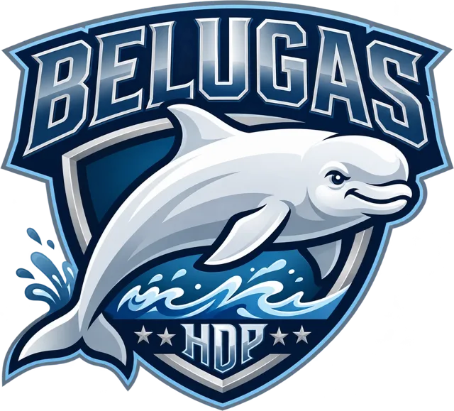

<!doctype html>
<html lang="es">
<head>
<meta charset="utf-8">
<meta name="viewport" content="width=device-width,initial-scale=1,viewport-fit=cover">
<meta name="apple-mobile-web-app-capable" content="yes">
<meta name="mobile-web-app-capable" content="yes">
<meta name="apple-mobile-web-app-status-bar-style" content="black-translucent">
<meta name="apple-mobile-web-app-title" content="Belugas">
<meta name="theme-color" content="#0d2347">
<link rel="apple-touch-icon" href="icon.png">
<link rel="icon" href="icon.png">
<meta name="color-scheme" content="dark">
<title>Belugas</title>
<style>
/* Belugas: el mismo azul marino de las zonas de anotación, con azul hielo de acento */
:root{--navy:#0d2347;--ice:#5aaeff;--bg:#0d2347;--card:#15305c;--fill:#23457d;--line:rgba(159,179,209,.26);--edge:rgba(170,200,240,.3);--tx:#eef3fb;--mut:#9fb3d1;--tint:#ffffff;--onTint:#0d2347;--link:#9fd0ff;--ok:#30d158;--nos:#ff9f0a;--bad:#ff453a;--badTx:#ff7b72;--glass:rgba(13,35,71,.84);--shadow:0 8px 30px rgba(0,0,0,.5);--tabh:58px}
*{box-sizing:border-box;-webkit-tap-highlight-color:transparent}
html,body{margin:0;height:100%;overflow:hidden}
body{background:var(--bg);color:var(--tx);font:17px/1.3 -apple-system,BlinkMacSystemFont,system-ui,sans-serif;-webkit-user-select:none;user-select:none;-webkit-font-smoothing:antialiased;-webkit-text-size-adjust:100%}
button,input,select{font:inherit;color:inherit}
button{border:0;background:var(--fill);box-shadow:inset 0 0 0 1px var(--edge);border-radius:12px;padding:8px 14px;min-height:44px;cursor:pointer;transition:transform .1s ease-out}
button.tint,button.on,button.ok.on,button.nos.on,button.rv.on{box-shadow:none}
button:active{transform:scale(.96)}
button:disabled{opacity:.35;transform:none}
button.tint,button.on{background:var(--tint);color:var(--onTint);font-weight:600}
button.ok.on{background:var(--ok)}button.nos.on{background:var(--nos)}button.rv.on{background:var(--bad)}
button.plain{background:none;box-shadow:none;color:var(--link);padding:8px 4px}
button.plain.danger{color:var(--badTx)}
button.x{background:none;box-shadow:none;color:var(--badTx);min-height:36px;padding:4px 8px}
input,select{background:var(--fill);border:0;border-radius:10px;padding:10px 12px;min-height:44px;-webkit-user-select:text;user-select:text}
.ico{width:22px;height:22px;flex:none;stroke:currentColor;fill:none;stroke-width:1.9;stroke-linecap:round;stroke-linejoin:round}
.glass{background:var(--glass);-webkit-backdrop-filter:blur(22px) saturate(180%);backdrop-filter:blur(22px) saturate(180%)}
.mut{color:var(--mut)}.g{color:var(--ok);font-weight:600}.r{color:var(--badTx);font-weight:600}.a{color:var(--nos);font-weight:600}
.dot{display:inline-block;width:14px;height:14px;border-radius:50%;vertical-align:-2px;margin-right:8px;flex:none;box-shadow:inset 0 0 0 1px rgba(0,0,0,.2)}

/* barra de pestañas */
.warn{position:fixed;z-index:50;top:calc(env(safe-area-inset-top) + 8px);left:50%;transform:translateX(-50%);max-width:calc(100% - 32px);padding:10px 18px;border-radius:14px;background:#ff453a;color:#fff;font-weight:600;font-size:15px;text-align:center;box-shadow:var(--shadow)}
.tabbar{position:fixed;left:0;right:0;bottom:0;z-index:10;height:calc(var(--tabh) + env(safe-area-inset-bottom));padding-bottom:env(safe-area-inset-bottom);display:flex;justify-content:center;gap:6px;border-top:.5px solid var(--line)}
.tabbar button{background:none;box-shadow:none;border-radius:0;display:flex;align-items:center;justify-content:center;gap:8px;flex:0 1 170px;color:var(--mut);font-size:14px;font-weight:600}
.tabbar button.on{color:var(--tint);background:none}
.tabbar .ico{width:25px;height:25px}

/* campo */
.fscreen{position:fixed;inset:0 0 calc(var(--tabh) + env(safe-area-inset-bottom)) 0;display:flex;flex-direction:column;padding:calc(env(safe-area-inset-top) + 8px) 14px 10px}
.topbar{display:grid;grid-template-columns:1fr auto 1fr;align-items:center;gap:12px;min-height:50px}
.topbar .l{font-weight:600;font-size:17px;line-height:1.15;display:flex;align-items:center;gap:10px}
.topbar .l img{height:44px;width:auto;flex:none}
.hero{display:flex;align-items:center;gap:20px}.hero img{width:150px;height:auto}.card.hero h2{font-size:28px;font-weight:700;color:var(--tx);text-transform:none;letter-spacing:-.01em;margin:0}
.topbar .l small{display:block;color:var(--mut);font-weight:400;font-size:13px}
.topbar .rt{display:flex;justify-content:flex-end;gap:8px}
.seg{display:inline-flex;background:var(--fill);box-shadow:inset 0 0 0 1px var(--edge);border-radius:999px;padding:3px}
.seg button{background:none;box-shadow:none;border-radius:999px;min-height:36px;padding:6px 26px;font-weight:600;font-size:16px;color:var(--tx)}
.seg button.on{background:var(--tint);color:var(--onTint);box-shadow:0 2px 8px rgba(0,0,0,.25)}
.pill{display:inline-flex;align-items:center;gap:6px;border-radius:999px;padding:7px 14px;min-height:40px;font-size:15px;font-weight:600}
.pill.on{background:var(--tint);color:var(--onTint)}
.frow{flex:1;min-height:0;display:flex;gap:12px;margin-top:8px}
.downs{width:82px;flex:none;display:flex;flex-direction:column;align-items:center;gap:10px;padding:14px 0;background:var(--card);box-shadow:inset 0 0 0 1px var(--line);border-radius:18px}
.cap{font-size:12px;color:var(--mut);text-transform:uppercase;letter-spacing:.06em;font-weight:600}
.downs button{width:58px;height:58px;min-height:58px;border-radius:50%;font-size:19px;font-weight:700;padding:0}
.downs button.on{box-shadow:0 0 0 3px var(--card),0 0 0 5px var(--tint)}
.downs button.dok{background:var(--ok);color:#fff}.downs button.dbad{background:var(--bad);color:#fff}
.dwrap{display:flex;flex-direction:column;align-items:center;gap:3px;min-height:76px}
/* jugada escogida antes del saque */
.downs button.jplan{width:70px;height:auto;min-height:70px;border-radius:16px;display:flex;flex-direction:column;align-items:center;justify-content:center;gap:3px;padding:8px 4px;font-size:12px;font-weight:600}
.jplan .ico{width:24px;height:24px}.jplan b{font-size:11px;line-height:1.15;font-weight:700;overflow-wrap:break-word}.jplan span{font-size:11px;opacity:.8}
.downs button.jplan.on{background:var(--tint);color:var(--onTint)}
.dwrap small{font-size:13px;font-weight:700}
.need{margin-top:auto;text-align:center;padding:0 6px}
.need b{display:block;font-size:26px;font-weight:700;letter-spacing:-.02em}
.need span{font-size:12px;color:var(--mut);line-height:1.2;display:block}
.fbox{flex:1;min-width:0;position:relative;border-radius:18px;overflow:hidden;background:#1d5c34}
#fbox>svg,#howbox>svg{position:absolute;inset:0;width:100%;height:100%;display:block}
*{touch-action:manipulation} /* sin zoom al tocar dos veces; el campo principal también, para poder quitar un zoom con dos dedos encima de él */
#howbox,#sub,#edbox{touch-action:none} /* aquí se arrastran puntos y jugadores */
#edbox{position:absolute;inset:0}
#field,#sub{cursor:pointer}
.scrim{cursor:pointer}
.float{position:absolute;left:50%;bottom:16px;transform:translateX(-50%);display:flex;align-items:center;gap:8px;padding:7px 7px 7px 20px;border-radius:999px;box-shadow:var(--shadow);white-space:nowrap;animation:rise .25s cubic-bezier(.2,.9,.3,1)}
.float .t{font-size:17px;font-weight:600;margin-right:6px}
.float button{border-radius:999px;min-height:42px;padding:6px 18px;font-weight:600}
.toast{position:absolute;top:14px;left:50%;transform:translateX(-50%);padding:8px 18px;border-radius:999px;font-weight:600;box-shadow:var(--shadow);white-space:nowrap}
@keyframes rise{from{opacity:0;transform:translate(-50%,10px)}}

/* hojas */
.scrim{position:fixed;inset:0;background:rgba(0,0,0,.32);z-index:20;animation:fade .2s}
.sheet{position:fixed;z-index:21;left:50%;top:50%;transform:translate(-50%,-50%);width:min(980px,calc(100vw - 40px));max-height:calc(100dvh - 56px);overflow:auto;background:var(--bg);border-radius:22px;box-shadow:var(--shadow);padding:22px 24px;animation:pop .3s cubic-bezier(.2,.9,.3,1)}
@keyframes pop{from{opacity:0;transform:translate(-50%,-47%) scale(.97)}}
@keyframes fade{from{opacity:0}}
.shead{display:flex;align-items:flex-start;justify-content:space-between;gap:12px;margin-bottom:18px}
.shead h1{font-size:28px;font-weight:700;letter-spacing:-.015em;margin:0}
.shead p{margin:3px 0 0;color:var(--mut)}
.xbtn{width:34px;height:34px;min-height:34px;border-radius:50%;padding:0;display:grid;place-items:center;color:var(--mut)}
.xbtn .ico{width:16px;height:16px;stroke-width:2.6}
.tiles{display:grid;grid-template-columns:repeat(auto-fill,minmax(270px,1fr));gap:14px}
.tile{background:var(--card);box-shadow:inset 0 0 0 1px var(--line);border-radius:16px;padding:10px;text-align:left;display:flex;flex-direction:column;gap:6px}
.tile b{font-size:17px;padding:2px 4px 0}
.tile small{font-size:13px;color:var(--mut);padding:0 4px 4px;line-height:1.3}
.tile .noimg{aspect-ratio:26/21.5;border-radius:10px;background:#2b7a47;display:grid;place-items:center;color:#fffa;font-size:14px}

/* recrear la jugada */
.how{position:fixed;inset:0;z-index:30;background:var(--bg);display:flex;animation:fade .2s}
.hmain{flex:1;min-width:0;position:relative;background:#1d5c34}
#howbox{position:absolute;inset:0}
#sub [data-h]{cursor:grab}
.htop{position:absolute;top:calc(env(safe-area-inset-top) + 12px);left:14px;right:14px;display:flex;align-items:flex-start;justify-content:space-between;gap:10px;pointer-events:none}
.htop>*{pointer-events:auto}
.readout,.htitle,.toast{pointer-events:none}
.hhint{position:absolute;top:calc(env(safe-area-inset-top) + 74px);left:50%;transform:translateX(-50%);display:flex;align-items:center;gap:8px;padding:8px 18px;border-radius:999px;font-size:15px;font-weight:600;box-shadow:var(--shadow);white-space:nowrap;max-width:calc(100% - 28px);overflow:hidden}
.hhint i{display:inline-block;width:12px;height:12px;border-radius:50%;margin:0 4px 0 6px;vertical-align:-1px;box-shadow:0 0 0 2px #fff}
.hhint .plain{min-height:32px;padding:2px 6px;font-size:14px}
.htitle{padding:8px 22px;border-radius:999px;font-weight:700;text-align:center;box-shadow:var(--shadow)}
.htitle small{display:block;font-weight:500;font-size:12px;color:var(--mut)}
.htop .pill{box-shadow:var(--shadow)}
.readout{position:absolute;bottom:18px;left:50%;transform:translateX(-50%);padding:10px 22px;border-radius:999px;font-size:19px;font-weight:700;box-shadow:var(--shadow);white-space:nowrap;letter-spacing:-.01em}
.insp{width:400px;flex:none;display:flex;flex-direction:column;background:var(--bg);border-left:.5px solid var(--line);padding:calc(env(safe-area-inset-top) + 14px) 16px calc(env(safe-area-inset-bottom) + 14px)}
.insp .scroll{flex:1;overflow:auto;min-height:0;margin:0 -4px;padding:0 4px}
.ghead{font-size:13px;color:var(--mut);text-transform:uppercase;letter-spacing:.04em;margin:4px 6px 7px;font-weight:500}
.ghead.sech{font-size:15px;font-weight:700;color:var(--tx);margin:22px 4px 10px}
.sect{display:flex;align-items:baseline;gap:10px;flex-wrap:wrap;margin:26px 4px 12px}.sect h2{font-size:22px;margin:0}.sect .mut{font-size:15px}.sect .plain{margin-left:auto;min-height:32px;padding:2px 8px;font-size:15px}
.group{background:var(--card);box-shadow:inset 0 0 0 1px var(--line);border-radius:14px;padding:12px;margin-bottom:18px}
.group p{margin:0 2px 8px;color:var(--mut);font-size:15px}
.yrow{display:flex;align-items:center;justify-content:space-between;gap:10px}
.stepper{display:flex;align-items:center;gap:6px}
.stepper button{width:46px;padding:0;font-size:22px;font-weight:600}
.stepper b{min-width:92px;text-align:center;font-size:22px;letter-spacing:-.01em}
.tiles2{display:grid;grid-template-columns:1fr 1fr;gap:8px}
.rtile{display:flex;flex-direction:column;align-items:flex-start;text-align:left;gap:2px;min-height:62px;padding:10px 12px}
.rtile b{font-size:16px;font-weight:600}
.rtile small{font-size:12.5px;opacity:.72;line-height:1.2}
.pchips{display:flex;flex-wrap:wrap;gap:8px}
.pchip{display:inline-flex;align-items:center;gap:8px;border-radius:999px;padding:5px 14px 5px 5px;min-height:46px;font-weight:500}
.pchip i{width:34px;height:34px;border-radius:50%;display:grid;place-items:center;font-style:normal;font-weight:700;font-size:13px;color:#111;box-shadow:inset 0 0 0 1px rgba(0,0,0,.15)}
.keys{list-style:none;margin:0 0 6px;padding:0}
.keys li{display:flex;align-items:center;gap:10px;padding:6px 2px;font-size:15px}
.keys i{width:18px;height:18px;border-radius:50%;flex:none;box-shadow:0 0 0 2.5px #fff,0 1px 4px rgba(0,0,0,.3)}
.group .seg{display:flex;background:var(--fill)}.group .seg button{flex:1;padding:6px 10px;white-space:nowrap}.group .seg button.on{background:var(--tint);color:var(--onTint)}
.latrow{border-top:.5px solid var(--line);padding:10px 0 4px}
.latrow .lh{display:flex;justify-content:space-between;align-items:center;margin-bottom:8px}
.scrim.clear{background:transparent;animation:none;z-index:40}
.scrim.top,.sheet.top{z-index:45} /* Jugadores también encima de recrear la jugada */
.pgrid{display:grid;grid-template-columns:repeat(3,minmax(0,1fr));gap:8px;padding:12px}
.pname{display:flex;align-items:center;gap:8px;min-height:46px;padding:6px 10px;text-align:left;font-size:16px}
.pname span{flex:1;min-width:0;overflow:hidden;text-overflow:ellipsis;white-space:nowrap}
.pname small{font-size:12px;font-weight:700;color:var(--mut);background:var(--card);border-radius:6px;padding:1px 6px}
.pname.on small{background:rgba(13,35,71,.12);color:inherit}
.mfoot{display:flex;gap:8px;align-items:center;padding:0 12px 12px;flex-wrap:wrap}
.mfoot input{flex:1;min-height:40px}
.menu{position:fixed;z-index:41;border-radius:14px;box-shadow:0 12px 40px rgba(0,0,0,.35);overflow:auto;max-height:calc(100dvh - 24px);padding:4px 0;animation:menu .22s cubic-bezier(.2,.9,.3,1);transform-origin:left top}
@keyframes menu{from{opacity:0;transform:scale(.92)}}
.mtitle{display:flex;align-items:center;gap:10px;padding:10px 14px;font-weight:700;border-bottom:.5px solid var(--line)}
.minput input{flex:1;min-height:38px;padding:6px 10px}
.minput button{min-height:38px;padding:4px 14px}
.badge2{width:30px;height:30px;border-radius:50%;display:grid;place-items:center;font-style:normal;font-weight:700;font-size:13px;color:#111;flex:none;box-shadow:inset 0 0 0 1px rgba(0,0,0,.15)}
.nube{margin:0 0 12px;font-weight:600;color:var(--nos)}.nube.ok{color:var(--ok)}
.lineup{display:grid;grid-template-columns:1.3fr 1fr;gap:16px;align-items:start}
#lbox{border-radius:14px;overflow:hidden;box-shadow:inset 0 0 0 1px var(--line)}
#lbox g{cursor:pointer}
.lside{background:var(--card);box-shadow:inset 0 0 0 1px var(--line);border-radius:14px}
.lside .pgrid{grid-template-columns:repeat(2,minmax(0,1fr))}
.lhint{padding:28px 18px;color:var(--mut);text-align:center}
@media (max-width:900px){.lineup{grid-template-columns:1fr}}
.addlat{position:absolute;right:16px;bottom:78px;box-shadow:var(--shadow);min-height:46px;padding:8px 18px}
.why b{display:block;margin:4px 2px 2px}.why p{margin:0 2px 10px}
.ifoot{display:flex;gap:10px;padding-top:12px}
.ifoot .tint{flex:1;min-height:54px;font-size:18px;border-radius:14px}
.ifoot .td{min-height:54px;min-width:92px;border-radius:14px;font-weight:600}
@media (max-aspect-ratio:1/1){.how{flex-direction:column}.insp{width:auto;height:46%;border-left:0;border-top:.5px solid var(--line)}}

/* otras pestañas */
.page{position:fixed;inset:0 0 calc(var(--tabh) + env(safe-area-inset-bottom)) 0;overflow:auto;-webkit-overflow-scrolling:touch;padding:calc(env(safe-area-inset-top) + 14px) 28px 30px}
.lt{font-size:34px;font-weight:700;letter-spacing:-.02em;margin:8px 4px 16px}
.card{background:var(--card);box-shadow:inset 0 0 0 1px var(--line);border-radius:14px;padding:16px;margin-bottom:16px}
.card h2,.h2{font-size:13px;margin:0 0 10px;color:var(--mut);font-weight:500;text-transform:uppercase;letter-spacing:.04em}
.row{display:flex;flex-wrap:wrap;gap:8px;margin-bottom:12px;align-items:center}
.row.tight{margin:0}
.item{display:flex;justify-content:space-between;align-items:center;gap:10px;padding:8px 0;border-bottom:.5px solid var(--line)}
.item:last-child{border-bottom:0}
.item input{flex:1}
.badge{display:inline-block;padding:4px 12px;border-radius:99px;font-weight:600;font-size:14px;background:var(--fill)}
.badge.ok{background:var(--ok);color:#fff}.badge.nos{background:var(--nos);color:#fff}.badge.rv{background:var(--bad);color:#fff}
.kpis{display:grid;grid-template-columns:repeat(auto-fit,minmax(140px,1fr));gap:12px;margin-bottom:16px}
.kpi{background:var(--card);box-shadow:inset 0 0 0 1px var(--line);border-radius:14px;padding:14px}
.kpi span{font-size:13px;color:var(--mut)}
.kpi b{display:block;font-size:30px;font-weight:700;letter-spacing:-.02em;margin-top:2px}
table{width:100%;border-collapse:collapse;font-size:15px}
th,td{text-align:right;padding:9px 6px;border-bottom:.5px solid var(--line)}
th:first-child,td:first-child{text-align:left}
th{color:var(--mut);font-weight:500;font-size:13px}
.stack{display:flex;height:10px;border-radius:5px;overflow:hidden;background:var(--fill);margin:10px 0}
.stack i{display:block}
.cols2{display:grid;gap:16px}
/* fantasy */
.mvp{display:flex;align-items:center;gap:22px;padding:22px;border-radius:20px;background:linear-gradient(135deg,#1d3f78,#13336a 55%,#0d2347);box-shadow:inset 0 0 0 1px var(--line);margin-bottom:16px;position:relative;overflow:hidden}
.mvp .av{width:92px;height:92px;font-size:34px}
.mvp .who{flex:1;min-width:0}
.mvp .tag{display:inline-block;background:#ffd60a;color:#2a2000;font-weight:800;font-size:12px;letter-spacing:.08em;padding:3px 10px;border-radius:99px}
.mvp h2{font-size:30px;margin:6px 0 4px;letter-spacing:-.02em}
.mvp .pts{text-align:right}
.mvp .pts b{display:block;font-size:56px;line-height:1;letter-spacing:-.03em}
.mvp .pts span{color:var(--mut);font-size:14px}
.mvp img{position:absolute;right:-30px;bottom:-40px;width:220px;opacity:.08;pointer-events:none}
.av{width:44px;height:44px;border-radius:50%;display:grid;place-items:center;font-style:normal;font-weight:800;color:#111;flex:none;box-shadow:0 0 0 2px #fff}
.lb{display:flex;flex-direction:column;gap:2px}
.lrow{display:grid;grid-template-columns:34px 44px 1fr auto;gap:12px;align-items:center;padding:10px 4px;border-bottom:.5px solid var(--line)}
.lrow:last-child{border-bottom:0}
.lrow .rk{font-size:20px;font-weight:800;color:var(--mut);text-align:center}
.lrow .nm{min-width:0}
.lrow .nm b{display:block;font-size:17px}
.lrow .nm small{display:block;color:var(--mut);font-size:13px;white-space:nowrap;overflow:hidden;text-overflow:ellipsis}
.lrow .bar{height:6px;border-radius:3px;background:var(--fill);margin-top:6px;overflow:hidden}
.lrow .bar i{display:block;height:100%;background:linear-gradient(90deg,#5aaeff,#9fd0ff)}
.lrow .p{font-size:24px;font-weight:800;letter-spacing:-.02em;text-align:right;min-width:70px}
.lrow .p small{display:block;font-size:12px;color:var(--mut);font-weight:600}
.awards{display:grid;grid-template-columns:repeat(auto-fill,minmax(200px,1fr));gap:12px;margin-bottom:16px}
.aw{background:var(--card);box-shadow:inset 0 0 0 1px var(--line);border-radius:14px;padding:14px;display:flex;gap:12px;align-items:center}
.aw .av{width:38px;height:38px;font-size:15px}
.aw small{display:block;color:var(--mut);font-size:12px;text-transform:uppercase;letter-spacing:.05em;font-weight:600}
.aw b{display:block;font-size:16px}
.aw span{font-size:13px;color:var(--mut)}
.spark{display:block}
.scoring{display:grid;grid-template-columns:repeat(auto-fill,minmax(230px,1fr));gap:6px 18px;font-size:15px}
.scoring div{display:flex;justify-content:space-between;border-bottom:.5px solid var(--line);padding:6px 0}
@media(min-width:900px){.cols2{grid-template-columns:1fr 1fr}}
.seg.sm button{padding:5px 20px;min-height:34px;font-size:15px}
.tiles.pk{grid-template-columns:repeat(auto-fill,minmax(200px,1fr))} /* 4 por fila: una sección cabe sin bajar */
.pksegs{display:flex;margin:0 0 16px}.pksegs button{flex:1;min-height:46px;padding:8px 10px;font-size:17px}.pksegs .n{opacity:.55;font-weight:500;margin-left:6px}
@media (prefers-reduced-motion:reduce){*{animation:none!important;transition:none!important}}
</style>
</head>
<body>
<div id="warn"></div>
<main id="app"></main>
<nav class="tabbar glass" id="tabs"></nav>
<div id="ov"></div>
<div id="pop"></div>
<script>
const KEY = 'tochito.v4';
const $ = s => document.querySelector(s);
const esc = s => String(s == null ? '' : s).replace(/[&<>"']/g, c => ({'&':'&amp;','<':'&lt;','>':'&gt;','"':'&quot;',"'":'&#39;'}[c]));
const MID = 35, GOAL_R = 60, GOAL_L = 10; // yardas en el campo de 70 (zonas de 10)
// cada serie arranca en la yarda 10 de quien ataca
const START = side => ({x: side === 'O' ? GOAL_L + 10 : GOAL_R - 10, y: 12.5});
const PAR = 3; // ganancia mínima para decir que funcionó; ponytail: constante, volverla ajuste si hace falta

const ICONS = {
  field: '<rect x="2.5" y="5" width="19" height="14" rx="2.5"/><path d="M12 5v14"/><circle cx="12" cy="12" r="2.6"/>',
  plays: '<rect x="5" y="4" width="14" height="17" rx="2.5"/><path d="M9.5 4V2.8h5V4M8.5 10h7M8.5 13.5h7M8.5 17h4"/>',
  stats: '<path d="M5 20v-7M10 20V5M15 20v-9M20 20V9"/>',
  fantasy: '<path d="M8 4h8v5a4 4 0 0 1-8 0z"/><path d="M8 6H5.5a2.5 2.5 0 0 0 2.6 4M16 6h2.5a2.5 2.5 0 0 1-2.6 4M12 13v4M9 20.5h6M10 17h4"/>',
  team: '<circle cx="9" cy="8" r="3.2"/><path d="M3 19.5c.6-3.3 3-5 6-5s5.4 1.7 6 5"/><circle cx="17" cy="8.8" r="2.6"/><path d="M16.6 14.3c2.3.2 4 1.8 4.5 5"/>',
  undo: '<path d="M9 14 4 9l5-5"/><path d="M4 9h10.5a5.5 5.5 0 0 1 0 11H11"/>',
  move: '<path d="M12 3v18M3 12h18M12 3 9.5 5.5M12 3l2.5 2.5M12 21l-2.5-2.5M12 21l2.5-2.5M3 12l2.5-2.5M3 12l2.5 2.5M21 12l-2.5-2.5M21 12l-2.5 2.5"/>',
  back: '<path d="M15 4 7 12l8 8"/>',
  x: '<path d="M6 6l12 12M18 6 6 18"/>',
  check: '<path d="M5 12.5 10 17.5 19 7"/>',
  plus: '<path d="M12 5v14M5 12h14"/>'
};
const icon = n => `<svg class="ico" viewBox="0 0 24 24">${ICONS[n]}</svg>`;
const TABS = [['field','Campo'],['plays','Jugadas'],['stats','Análisis'],['fantasy','Fantasy'],['team','Equipo']];

// Cómo estuvo la jugada. Incompleto e intercepción cuentan 0 yardas.
const RES = {
  O: ['Pase completo','Corrida','Incompleto','Sack','Intercepción','Fumble','Castigo'],
  D: ['Pase completo','Corrida','Incompleto','Sack','Intercepción','Fumble forzado','Castigo']
};
const LBL = {O: {}, D: {'Pase completo': 'Completaron pase', 'Corrida': 'Corrió el rival'}};
const RES_TXT = {
  O: {'Pase completo': 'La lanzaron y la atraparon', 'Corrida': 'No se lanzó, se corrió con el balón', 'Incompleto': 'No la atraparon o no se lanzó bien',
      'Sack': 'Le quitaron la bandera al QB', 'Intercepción': 'La atrapó el rival', 'Fumble': 'Se nos cayó el balón', 'Castigo': 'Falta a favor o en contra'},
  D: {'Pase completo': 'El rival lanzó y la atraparon', 'Corrida': 'El rival corrió con el balón', 'Incompleto': 'No la atraparon',
      'Sack': 'Le quitamos la bandera al QB', 'Intercepción': 'La atrapamos nosotros', 'Fumble forzado': 'Se les cayó el balón', 'Castigo': 'Falta a favor o en contra'}
};
const RUN = ['Pase completo','Corrida'];
const ZERO = ['Incompleto','Intercepción'];
const AUTO = {O: {'Sack': ['Presión','rv']}, D: {}};
// Por qué falló. nos = falla nuestra, rv = nos la frenaron
const CAUSES = {
  O: {nos: ['No atrapó','Mal pase','Mala ruta o confusión','Se cayó'], rv: ['Nos cubrieron','Nos bloquearon','Presión','La leyeron']},
  D: {nos: ['Perdimos al receptor','Se nos fue la bandera','Se cruzaron','Hueco en la zona'], rv: ['Buen pase del rival','Nos bloquearon','Buena corrida del rival','Nos engañaron']}
};
// razones de un pase incompleto (ataque)
const INC = {nos: ['Se le cayó','Pase alto','Pase corto o largo','Pase desviado','Mala ruta'], rv: ['La taparon','Lo cubrieron','Presión, lanzó apurado','Nadie abierto']};
const GL = {O: {nos: 'Falla nuestra', rv: 'Nos la frenaron'}, D: {nos: 'Falla nuestra', rv: 'El rival lo hizo bien'}};
const GL_TXT = {O: {nos: 'La jugada estaba bien, fallamos al hacerla', rv: 'La defensa la paró'}, D: {nos: 'Nos equivocamos nosotros', rv: 'El rival hizo bien su jugada'}};
const ROLES = ['Q','C','X','Y','Z'];
const ourTD = e => e.side === 'O' ? e.td : e.ret, theirTD = e => e.side === 'O' ? e.ret : e.td;
// Libro de jugadas leído de la tarjeta. pos = [adelante, lateral] en yardas desde el balón (lateral: + hacia la derecha de la tarjeta).
// rutas = puntos acumulados desde donde sale el jugador; motion = movimiento antes del snap; hot = receptor principal.
// snap = quién recibe el saque (Q si no se dice); qb = a quién se la da después, y ese es el que lanza o corre.
// entrega: 'corriendo' = el del saque la lleva un rato antes de dársela (si no, se la da luego luego).
// short = descripción corta; fin = último letrero de la animación cuando el normal ("X lanza a Y") no la explica.
// Las que dibujan ustedes en la app viven en S.pb y tienen prioridad sobre estas.
const PLAYBOOK = {
  'Pantalla izquierda': {short: 'Todos hacen pantalla para el pase a la izquierda', desc: 'Pase normal. X finge ir abierto pero en el set se pega al centro; todos hacen pantalla para el pase a la izquierda.',
    pos: {Q:[-6,0], C:[-1.3,0], X:[0,-6], Y:[-1,5], Z:[0,9]},
    routes: {X:{motion:[0,4], pts:[[7.5,2.8],[9,4.2],[9.5,9]]}, C:{pts:[[3,.5],[3,6.5]]}, Z:{pts:[[6,0],[7.5,-1],[5.5,-1.8]]}, Y:{hot:1, pts:[[7,0],[8,-4],[8,-9]]}, Q:{pts:[[1.5,1.5]]}}},
  'Corto y largo': {short: 'Finge que va corto y se va largo', desc: 'Pase normal buscando corto. Uno hace el engaño de que va corto y se va largo.',
    pos: {Q:[-6,0], C:[-1.3,0], Z:[0,-5.3], Y:[0,3.3], X:[0,6]},
    routes: {Z:{pts:[[3,0],[3,.8]]}, C:{pts:[[3,0],[3,-.8]]}, Y:{hot:1, pts:[[3,0],[3.5,-1],[11,-1]]}, X:{pts:[[2.5,0],[2.5,-1]]}}},
  'Pantalla rápida': {short: 'Pase rápido al centro para pocas yardas', desc: 'Pantalla para pase corto. El centro va al mismo ritmo que el QB para pase rápido y avanzar las pocas yardas que faltan; los demás dan opción.',
    pos: {Q:[-5.5,0], C:[-1.3,0], X:[0,-6.7], Y:[-1,-2.6], Z:[0,5.6]},
    routes: {C:{hot:1, pts:[[1.2,-4]]}, Q:{pts:[[-.5,-3.5]]}, X:{pts:[[1.5,1.5],[2,2.3]]}, Y:{pts:[[4,0],[5,-3]]}, Z:{pts:[[3,0],[2.3,-.6]]}}},
  'Pase normal 1': {short: 'Y sube 4 y abre en diagonal a la derecha', desc: 'Pase normal.',
    pos: {Q:[-6,0], C:[-1.3,0], X:[0,-4.8], Y:[0,-2.4], Z:[0,2.4]},
    routes: {X:{pts:[[4,0],[6,-2.5]]}, C:{pts:[[2,0],[2,-5.5]]}, Y:{hot:1, pts:[[4,0],[7,1],[9,3.5]]}, Z:{pts:[[1.5,2.5],[2,5.5]]}}},
  'Z cierra': {short: 'Z recibe el saque y se la da al QB', desc: 'Z cierra y pide el balón, se lo da al QB. Se puede correr o pasar y Z queda como opción de pase.', snap: 'Z', qb: 'Q', fin: 'El QB corre o lanza; Z queda de opción',
    pos: {Q:[-6,0], C:[-1.3,0], X:[0,-6.6], Y:[0,-4.1], Z:[-1,4.7]},
    routes: {Z:{hot:1, motion:[0,-3.1], pts:[[0,-3.4],[4,-3.4],[4.5,3.1]]}, X:{pts:[[3.5,0],[7.5,4.5],[6,4.5]]}, Y:{pts:[[2,-1.5],[2,.8]]}, C:{pts:[[7,0],[7.5,6]]}}},
  'Pase normal 2': {short: 'Tres a la derecha; X se va largo', desc: 'Pase normal.',
    pos: {Q:[-6,0], C:[-1.3,0], Z:[0,2.6], Y:[0,5.2], X:[0,8]},
    routes: {C:{pts:[[2,2],[2.5,6]]}, Z:{pts:[[1,-1],[2.5,-5.5]]}, Y:{pts:[[5,0],[8,-3]]}, X:{hot:1, pts:[[10,0]]}}},
  // de los videos que mandó Mau (14-oct)
  'Poste de Z': {short: 'Z en diagonal al centro; la derecha llena de opciones', desc: 'Pase normal, buena cerca de la zona de anotación. Z sube 8 y se mete en diagonal hacia el centro (principal). El centro sube 7 y sale a la derecha, Y cruza corto a la derecha y X sale a la banda izquierda.',
    pos: {Q:[-6,0], C:[-1.3,0], X:[0,-9], Y:[0,-4.5], Z:[0,7.5]},
    routes: {Z:{hot:1, pts:[[7.5,0],[12,-8]]}, C:{pts:[[7,0],[8.5,8]]}, Y:{pts:[[1.5,0],[2,10.5]]}, X:{pts:[[6.5,0],[6.5,-2.5]]}}},
  // redibujada por Mau en la app (14-oct): el QB es el que corre, y arranca hasta que tiene el balón
  'Falso QB': {short: 'Z de falso QB; el QB recibe y corre por la izquierda', desc: 'Engaño con corrida. El saque va a Z (falso QB), que se la pasa rápido al QB. Z le da la vuelta por detrás como si fuera a recibirla de regreso, y el QB, ya con el balón, corre por la izquierda. La idea es que no sepan quién la trae.', snap: 'Z', qb: 'Q',
    pos: {Q:[-6,0], C:[-1.3,0], X:[0,-9], Z:[0,-3], Y:[0,9]},
    routes: {Q:{hot:1, pts:[[0.5,-4.5],[2,-5],[5,-6],[7.5,-6]]}, Z:{pts:[[-2.7,1],[-4.3,3],[-3.5,5.3],[-0.5,8.3],[2,9.8]]}, X:{pts:[[6.5,0],[12,7]]}, C:{pts:[[8,0],[8,-5.5]]}, Y:{pts:[[12,0]]}}},
  // dibujada por Mau en la app (14-oct, "aaa"); sus letras pasadas a las de la jugada: su Y = Z (el del movimiento), su Q = Y (el que corre), su Z = QB
  'Z silencioso': {short: 'Saque sin hut a Z; Y la recibe y corre por la izquierda', desc: 'Engaño con corrida. Saque silencioso, sin "hut": Z sale hacia atrás y cruza por detrás del centro, y ahí el centro se la da. Z la lleva corriendo hacia Y y se la pasa de lado; Y espera quieto hasta tenerla y corre por la izquierda, mientras Z sigue hacia la derecha para el engaño. El centro abre por la izquierda pegado a la línea, X se mete en diagonal al centro y el QB se queda atrás.', snap: 'Z', qb: 'Y', entrega: 'corriendo',
    pos: {Q:[-6.5,0], C:[-1.3,0], X:[-1,-7], Z:[-1,-4], Y:[-4,7.5]},
    routes: {Z:{motion:[[-2.5,0],[-2.5,4]], pts:[[0,2.5],[0.5,8.5],[3.5,10.5],[7,10],[9.5,9.5]]}, Y:{hot:1, pts:[[0,-7],[1.5,-9.5],[7,-10],[10.5,-10]]}, C:{pts:[[0.3,-8],[3.3,-8.5],[5.8,-8.5]]}, X:{pts:[[4.5,0],[6,7.5]]}}},
  // diseñadas para completar las secciones (mínimo 4 por sección)
  'Cruce corto': {short: 'Y y el centro se cruzan corto', desc: 'Pase rápido. Y y el centro se cruzan corto por el centro (Y a 2 yardas, el centro a 3), casi rozándose, para que sus marcadores se estorben. X y Z se van largo para abrir espacio. Lanza al que salga libre del cruce.',
    pos: {Q:[-6,0], C:[-1.3,0], X:[0,-8.5], Y:[-1,-3.5], Z:[0,8.5]},
    routes: {Y:{hot:1, pts:[[3,1],[3,9]]}, C:{pts:[[4.3,-1],[4.3,-8]]}, X:{pts:[[11,0]]}, Z:{pts:[[11,0]]}}},
  'Diagonales rápidas': {short: 'X y Z en diagonal rápida al centro', desc: 'Pase rápido. X y Z dan dos pasos y se meten en diagonal hacia el centro; Y sale plano a la banda izquierda por debajo de X y el centro sube 4 y se regresa hacia el QB. Lanzar en cuanto uno quede libre.',
    pos: {Q:[-6,0], C:[-1.3,0], X:[0,-8.5], Y:[0,-4.5], Z:[0,8.5]},
    routes: {Z:{hot:1, pts:[[1.5,0],[4.5,-4]]}, X:{pts:[[1.5,0],[4.5,4]]}, Y:{pts:[[1,0],[1,-5.5]]}, C:{pts:[[5.3,0],[4.6,0.6]]}}},
  'Corre y lanza': {short: 'Y corre como corrida y lanza largo a X', desc: 'Engaño. Antes del saque Y se acomoda junto al QB. El QB se la da y Y corre hacia la derecha como si fuera corrida; cuando la defensa se le acerca, Y lanza largo a X, que fingió quedarse y luego se fue profundo. Si nadie se acerca, Y sigue corriendo.', qb: 'Y',
    pos: {Q:[-6,0], C:[-1.3,0], X:[0,-8.5], Y:[-1,3.5], Z:[0,8.5]},
    routes: {X:{hot:1, pts:[[2,0],[3,1],[12,3]]}, Y:{motion:[-4.5,-2], pts:[[0,5],[2,8]]}, Z:{pts:[[4,0],[4,3]]}, C:{pts:[[3.3,0],[3.3,-4]]}}},
  'Regresos cortos': {short: 'Suben 5 y se regresan hacia el QB', desc: 'Pase rápido. X, Y y Z suben 5 yardas y se regresan hacia el QB; el centro sale plano a la derecha. Lanza al que se regrese libre; sirve cuando la defensa se queda lejos.',
    pos: {Q:[-6,0], C:[-1.3,0], X:[0,-9], Y:[0,-4.5], Z:[0,8.5]},
    routes: {Z:{hot:1, pts:[[5,0],[4.2,-0.6]]}, X:{pts:[[5,0],[4.2,0.6]]}, Y:{pts:[[5,0],[4.2,0.6]]}, C:{pts:[[2.3,1],[2.8,6]]}}}
};
// jugadas que se agregan al libro después: entran una sola vez a quien ya tenía datos (si luego las quitan o renombran, no regresan)
const NUEVAS = {'Poste de Z': 'De avance', 'Falso QB': 'Engaños', 'Z silencioso': 'Engaños', 'Cruce corto': 'Rápidas', 'Diagonales rápidas': 'Rápidas', 'Corre y lanza': 'Engaños', 'Regresos cortos': 'Rápidas'};
// jugadas que cambiaron de sección: se aplica una sola vez (si después ustedes la mueven, se respeta)
const CAMBIOS = {'Pantalla izquierda': 'De avance'};
// jugadas de prueba que se borran de todo (una sola vez)
const BORRAR = ['aaa', 'aaaa'];
// jugadas que ustedes editaron y ya pasé al libro: su copia se quita una sola vez para que se use la del libro
const AL_LIBRO = ['Falso QB'];
// descripción corta: la de la jugada, o la primera frase de su descripción
const corta = n => { const pb = PLAYBOOK[n]; return pb ? pb.short || (pb.desc || '').split('. ')[0] : '' };
const pbPos = name => PLAYBOOK[name] && ROLES.map(r => PLAYBOOK[name].pos[r]);
const grpOf = (side, c) => [CAUSES[side], ...(side === 'O' ? [INC] : [])].map(g => Object.keys(g).find(k => g[k].includes(c))).find(Boolean);
const PALETTE = ['#4dabf7','#ff6b6b','#ffd43b','#da77f2','#ffa94d','#3bc9db','#f783ac','#f1f3f5','#9775fa','#e0b27a'];
const colorOf = name => {
  if (!S.players.includes(name)) return '#e5e5ea';
  const c = S.colors; return c[name] || (c[name] = PALETTE.find(x => !Object.values(c).includes(x)) || PALETTE[S.players.indexOf(name) % PALETTE.length]);
};

const dflt = () => ({
  players: [], pb: {}, off: Object.keys(PLAYBOOK),
  // secciones de ataque, por lo que se necesita en ese momento; secOf = en cuál va cada jugada
  secs: ['Rápidas', 'De avance', 'Engaños'],
  secOf: {'Pantalla rápida': 'Rápidas', 'Pantalla izquierda': 'De avance', 'Pase normal 1': 'De avance', 'Pase normal 2': 'De avance', 'Corto y largo': 'De avance', 'Z cierra': 'Engaños', ...NUEVAS}, seen: [], def: ['Carriles','Persona','Zona'], arch: [], archSide: {},
  forms: {
    'D:Carriles': [[-4,-10],[-4,-5],[-4,0],[-4,5],[-4,10]],
    'D:Persona': [[-2,-9],[-2,-4.5],[-2,0],[-2,4.5],[-2,9]],
    'D:Zona': [[-3,-8],[-3,0],[-3,8],[-9,-5],[-9,5]]
  },
  games: [], cur: null, side: 'O', ball: START('O'), down: 1, msg: '', series: [], sstart: START('O'), fd: false, colors: {},
  lines: {
    O: [['Q',-6,0],['C',-1.3,0],['X',0,-6],['Y',-1,5],['Z',0,9]].map(([r,dx,dy]) => ({r,dx,dy,name:''})),
    D: [['1',-3,-9],['2',-3,-3],['3',-3,3],['4',-3,9],['5',-8,0]].map(([r,dx,dy]) => ({r,dx,dy,name:''}))
  }
});
let S = (() => { try { return Object.assign(dflt(), JSON.parse(localStorage[KEY])) } catch { return dflt() } })();
// si no se puede guardar, que se vea: no queremos capturar un partido que se va a perder
let saveFail = false, guardado = '';
const save = () => {
  const j = JSON.stringify(S); if (j === guardado) return; guardado = j;
  try { localStorage[KEY] = j; saveFail = false } catch { saveFail = true }
  nube.dirty = true; nubeSave(); clearTimeout(tSubir); tSubir = setTimeout(subir, 1500);
};
// nube: copia del equipo en Supabase, para que nada se pierda aunque el navegador borre sus datos.
// La clave viaja en el link (#k=...), nunca en el código: el repositorio es público
const NUBE = 'https://zyuwghznifofdkaiozfb.supabase.co/rest/v1/rpc/', ANON = 'sb_publishable_b48BypnxEtWiDy6_AoQ0cg_8uGHNd2H'; // llave pública: solo deja usar las dos funciones
const lsGet = k => { try { return localStorage[k] } catch {} }, lsSet = (k, v) => { try { localStorage[k] = v } catch {} };
let clave = (location.hash.match(/k=([\w-]{24,})/) || [])[1] || lsGet('tochito.k');
if (clave) { lsSet('tochito.k', clave); if (!location.hash.includes(clave)) history.replaceState(null, '', '#k=' + clave) }
let nube = {t: null, dirty: false, ...(() => { try { return JSON.parse(lsGet('tochito.nube')) } catch {} })()}, nubeEst = clave ? 'Conectando' : '', nubeAt = 0, subiendo = false, tSubir;
const nubeSave = () => lsSet('tochito.nube', JSON.stringify(nube));
const cur = () => S.games.find(g => g.id === S.cur);
const dateStr = () => new Date().toLocaleDateString('es-MX', {day: 'numeric', month: 'short'});
function newGame(rival) { const g = {id: Date.now(), date: dateStr(), rival: rival || '', events: []}; S.games.push(g); S.cur = g.id; return g }
const initColors = () => { if (!S.colors || !Object.keys(S.colors).length) S.colors = Object.fromEntries(S.players.map((p, i) => [p, PALETTE[i % PALETTE.length]])) };
initColors();
S.ball.y = 12.5; // el balón siempre al centro
if (!cur()) newGame('');
// jugadas renombradas conservan su dibujo
Object.entries(S.pbAlias || {}).forEach(([nv, old]) => { if (PLAYBOOK[old]) PLAYBOOK[nv] = PLAYBOOK[old] });
// las que dibujaron ustedes (o editaron) mandan sobre las de la tarjeta
const mergePb = () => {
  AL_LIBRO.forEach(n => { const k = 'libro:' + n; if (S.seen.includes(k)) return; S.seen.push(k); delete S.pb[n] });
  Object.assign(PLAYBOOK, S.pb);
  Object.entries(NUEVAS).forEach(([n, s]) => { if (S.seen.includes(n)) return; S.seen.push(n); if (!S.off.includes(n) && !S.arch.includes(n)) S.off.push(n); if (!S.secOf[n]) S.secOf[n] = s });
  Object.entries(CAMBIOS).forEach(([n, s]) => { const k = 'sec:' + n; if (S.seen.includes(k)) return; S.seen.push(k); S.secOf[n] = s });
  BORRAR.forEach(n => { const k = 'borrar:' + n; if (S.seen.includes(k)) return; S.seen.push(k);
    ['off', 'def', 'arch'].forEach(l => S[l] = S[l].filter(x => x !== n)); [S.archSide, S.pb, S.secOf, PLAYBOOK].forEach(o => delete o[n]); delete S.forms['O:' + n]; delete S.forms['D:' + n] });
};
mergePb();

// borrador de la jugada. stage: null = campo, 'pick' = elegir jugada, 'how' = recrear cómo estuvo
// route = ruta del receptor ya estirada (su último punto es donde atrapó); vb = encuadre de la vista de recrear
// lat = pases después de atrapar o correr: t = dónde lanzó, c = dónde la recibió, to = quién. pen = castigo
const fresh = () => ({stage: null, play: null, res: null, cause: null, td: null, end: null, setBall: false, tgt: null, who: null, miss: null, route: null, catch: null, vb: null,
  lat: [], pen: {fav: false, yd: 5, extra: false}, foul: null, ret: false, qb: 0}); // qb = posición de quien lanzó (0 = Q)
let lastOv = '', lastPop = false, lastFl = '', tapAt = {x: 0, y: 0};
let ed = null, edDrag = null; // editor de jugadas abierto (ver openEd)
let pickSec = null; // sección que se ve al elegir jugada
let d = fresh(), tab = 'field', pop = null, popAt = null, popSheet = false, sf = {game: 'all', side: 'O', play: ''}, ff = {scope: 'game', game: null}, noClick = 0;
let MY = 20; // unidades por yarda a lo ancho en el campo principal; se ajusta para llenar la pantalla

// ---------- cálculo ----------
const yardsOf = (side, res, ball, end) => (!end || ZERO.includes(res)) ? 0 : Math.round(side === 'O' ? end.x - ball.x : ball.x - end.x);
const airOf = (side, a, c) => Math.round(side === 'O' ? c.x - a.x : a.x - c.x);
const isTO = e => e.side === 'O' ? ['Intercepción','Fumble'].includes(e.res) : ['Sack','Intercepción','Fumble forzado'].includes(e.res);
const takeaway = e => e.side === 'D' && ['Intercepción','Fumble forzado'].includes(e.res);
// fd = esta jugada consiguió la Primera: aunque gane poco, funcionó
function works(e) {
  if (e.res === 'Castigo') return !!(e.pen && e.pen.fav);
  if (e.td) return e.side === 'O';
  if (e.ret) return e.side === 'D';
  if (e.side === 'O') return RUN.includes(e.res) && (e.yds >= PAR || !!e.fd);
  return RUN.includes(e.res) ? e.yds < PAR && !e.fd : true;
}
const crosses = (a, b) => !!b && (S.side === 'O' ? a.x < MID && b.x >= MID : a.x > MID && b.x <= MID);
const RET = ['Intercepción','Fumble','Fumble forzado'];
const clamp = (v, a, b) => Math.max(a, Math.min(b, v));
const lineXY = (side, i) => { const p = S.lines[side][i]; return {x: clamp(S.ball.x + p.dx, 0.5, 69.5), y: clamp(S.ball.y + p.dy, 1, 24)} };
// ruta del receptor (pase completo, incompleto o intercepción): sale de la tarjeta y se puede estirar
// la ruta del receptor (su último punto es donde atrapó) o la de quien corrió (todos sus puntos se arrastran y de ahí sigue a donde terminó)
function recvRoute() {
  const run = d.res === 'Corrida';
  if (S.side !== 'O' || !(run || d.res === 'Pase completo' || ZERO.includes(d.res)) || d.tgt == null) return null;
  const pb = PLAYBOOK[d.play], p = S.lines.O[d.tgt], rt = pb && pb.routes[p.r], q = lineXY('O', d.tgt);
  const main = rt && rt.pts && rt.pts.length && routeSegs(rt, q.x, q.y).find(s => !s.dash);
  if (!main && !run) return null;
  // si en la jugada no tiene ruta, un punto a la mitad para acomodar por dónde corrió
  const st = main ? main.pts[0] : startOf([q.x, q.y], rt), end = d.end || S.ball, orig = main ? main.pts.slice(1) : [[(st[0] + end.x) / 2, (st[1] + end.y) / 2]];
  return {start: st, orig, pts: d.route || orig, run};
}
// estado del borrador: yardas, si funcionó, qué falta preguntar
function draft() {
  const side = S.side, O = side === 'O';
  if (d.res === 'Castigo') {
    // off = falta de quien tiene el balón: retrocede; si no, avanza
    const p = d.pen, off = O ? !p.fav : p.fav, dir = (O ? 1 : -1) * (off ? -1 : 1), goal = dir > 0 ? GOAL_R : GOAL_L;
    // cerca de la línea de gol el castigo es la mitad de lo que falta: nunca mete el balón en la zona
    const m = Math.min(p.yd, Math.floor(Math.max(0, dir * (goal - S.ball.x))) / 2), yds = off ? -m : m;
    const e = {side, res: 'Castigo', td: false, yds, raw: yds, pen: {...p, off}, penEnd: {x: S.ball.x + dir * m, y: S.ball.y}, auto: p.fav ? null : ['Castigo', 'nos']};
    e.worked = works(e); e.needWhy = false; e.ready = true; return e;
  }
  // incompleto: el balón se queda donde estaba aunque se haya tocado otro punto
  const end = d.res === 'Incompleto' ? null : d.end;
  const auto = end && RUN.includes(d.res) && (O ? end.x >= GOAL_R : end.x <= GOAL_L);
  const td = RUN.includes(d.res) && (d.td == null ? !!auto : d.td);
  // un TD vale hasta la línea de gol, no hasta donde se tocó dentro de la zona
  const yds = td ? Math.round(O ? GOAL_R - S.ball.x : S.ball.x - GOAL_L) : yardsOf(side, d.res, S.ball, end);
  const e = {side, res: d.res, td, ret: RET.includes(d.res) && d.ret, yds, end, fd: RUN.includes(d.res) && crosses(S.ball, end), raw: yardsOf(side, null, S.ball, end), auto: d.res && AUTO[side][d.res]};
  e.worked = d.res ? works(e) : null;
  e.needWhy = !!d.res && !e.worked && !e.auto;
  e.ready = !!(d.play && d.res && (!e.needWhy || d.cause));
  if (d.res === 'Pase completo') {
    const rr = recvRoute(), last = rr && rr.pts[rr.pts.length - 1];
    e.catch = last ? {x: last[0], y: last[1]} : (d.catch || {...(end || S.ball)});
    e.air = airOf(side, S.ball, e.catch); e.yac = yds - e.air;
    e.path = rr ? [rr.start, ...rr.pts] : null;
  }
  if (d.res === 'Corrida') { const rr = recvRoute(); e.path = rr ? [rr.start, ...rr.pts] : null }
  // incompleto o intercepción: a dónde iba el pase
  if (O && ZERO.includes(d.res) && d.tgt != null) {
    const rr = recvRoute(), last = rr && rr.pts[rr.pts.length - 1];
    e.aim = last ? {x: last[0], y: last[1]} : (d.catch || {x: clamp(S.ball.x + 8, 0, 70), y: lineXY('O', d.tgt).y});
    e.airAim = airOf(side, S.ball, e.aim); e.path = rr ? [rr.start, ...rr.pts] : null;
  }
  return e;
}
// cómo se repartió el avance: pase, corrida, pase atrás, corrida... (suma = total)
function pieces(e) {
  const O = S.side === 'O', r = p => Math.round(O ? p.x - S.ball.x : S.ball.x - p.x), f = (a, b) => r(b) - r(a), out = [];
  const end = e.td ? {x: O ? GOAL_R : GOAL_L, y: 0} : (e.end || S.ball);
  let at = S.ball;
  if (e.catch) { out.push(['Pase', f(S.ball, e.catch)]); at = e.catch }
  d.lat.forEach(l => { out.push(['Corrió', f(at, l.t)], ['Pase', f(l.t, l.c)]); at = l.c });
  out.push(['Corrió', f(at, end)]);
  return out;
}
// después de la línea solo se puede pasar hacia atrás; detrás de la línea, hacia donde sea
const pastLine = t => S.side === 'O' ? t.x > S.ball.x : t.x < S.ball.x;
const legal = l => { if (pastLine(l.t)) l.c.x = S.side === 'O' ? Math.min(l.c.x, l.t.x) : Math.max(l.c.x, l.t.x) };
const pending = () => { const w = askWho(); return (w && d[w[0]] == null) || d.lat.some(l => l.to == null) };
// a quién preguntar en la sub-pantalla: [campo, pregunta]
function askWho() {
  const r = d.res;
  if (!r) return null;
  if (S.side === 'O') return r === 'Pase completo' ? ['tgt', '¿Quién la atrapó?'] : r === 'Corrida' ? ['tgt', '¿Quién corrió con el balón?']
    : ZERO.includes(r) ? ['tgt', '¿A quién iba el pase?'] : null;
  return ['Sack','Intercepción','Fumble forzado'].includes(r) ? ['who', '¿Quién hizo la jugada?'] : r === 'Incompleto' ? ['who', '¿Quién la tapó?']
    : RUN.includes(r) ? ['miss', '¿A quién se le fue?'] : null;
}
function agg(l) {
  const n = l.length, bad = l.filter(e => !e.worked);
  return {n, y: l.reduce((a, e) => a + e.yds, 0), ok: n - bad.length,
    nos: bad.filter(e => e.grp === 'nos').length, rv: bad.filter(e => e.grp !== 'nos').length,
    td: l.filter(e => e.td).length, to: l.filter(isTO).length,
    get avg() { return n ? this.y / n : 0 }, get pct() { return n ? this.ok / n * 100 : 0 }};
}
function topCause(l, grp) {
  const c = {}; l.filter(e => !e.worked && e.cause && (!grp || e.grp === grp)).forEach(e => c[e.cause] = (c[e.cause] || 0) + 1);
  const t = Object.entries(c).sort((a, b) => b[1] - a[1])[0]; return t ? t[0] : '';
}
// Veredicto de una jugada. ponytail: umbrales fijos (4 intentos, 55% y 35%); volverlos ajuste si no calzan
function verdict(l) {
  const a = agg(l), tc = topCause(l);
  if (a.n < 4) return {k: '', t: 'A prueba', why: `Lleva ${a.n} de 4 intentos para poder evaluarla.`, a};
  const p = Math.round(a.pct), tn = topCause(l, 'nos');
  if (a.pct >= 55) return {k: 'ok', t: 'Mantener', why: `Funciona ${p}% de las veces y gana ${f1(a.avg)} yd por jugada.`, a};
  if (a.nos > a.rv) return {k: 'nos', t: 'Practicar', why: `La jugada es buena, lo que falla es la ejecución${tn ? ' (lo más repetido: ' + tn + ')' : ''}. Practíquenla antes de quitarla.`, a};
  const tr = topCause(l, 'rv');
  if (a.pct < 35) return {k: 'rv', t: 'Quitar', why: `Solo funciona ${p}% y casi siempre se la frenan${tr ? ' (' + tr + ')' : ''}. Candidata a salir del libro.`, a};
  return {k: 'nos', t: 'Ajustar', why: `Funciona ${p}%, pero seguido se la frenan${tr ? ' (' + tr + ')' : ''}. Cambien la ruta o úsenla menos.`, a};
}
const by = (l, k) => l.reduce((m, e) => ((m[e[k]] = m[e[k]] || []).push(e), m), {});
const f1 = x => (Math.round(x * 10) / 10).toString();
const sg = x => (x > 0 ? '+' : '') + x;
const pctCell = p => `<td class="${p >= 55 ? 'g' : p < 35 ? 'r' : ''}">${Math.round(p)}%</td>`;
const chips = (list, sel, a, cls) => list.map(x => `<button class="${cls || ''}${[].concat(sel).includes(x) ? ' on' : ''}" data-a="${a}" data-v="${esc(x)}">${esc(x)}</button>`).join('');
const avg = a => a.length ? a.reduce((x, y) => x + y, 0) / a.length : 0;
const rl = r => LBL[S.side][r] || r;
const verb = y => S.side === 'O' ? (y < 0 ? 'Retrocedimos' : 'Avanzamos') : (y < 0 ? 'El rival retrocedió' : 'El rival avanzó');
// solo las opciones que tienen sentido con las yardas marcadas: con avance no hay incompleto, sin avance no hay pase completo
function resOptions() {
  const y = d.end ? yardsOf(S.side, null, S.ball, d.end) : 0, F = S.side === 'O' ? 'Fumble' : 'Fumble forzado';
  // sin avance solo puede ser pase incompleto o corrida frenada en la línea: intercepción y fumble mueven el balón (se marcan tocando dónde quedó)
  // y el castigo tiene su propio botón en el campo
  const list = y > 0 ? ['Pase completo','Corrida','Intercepción',F,'Castigo'] : y < 0 ? ['Sack','Corrida','Pase completo',F,'Castigo'] : ['Incompleto','Corrida'];
  if (d.res && !list.includes(d.res)) list.unshift(d.res);
  return list;
}

// ---------- dibujo ----------
const passer = pb => (pb && (pb.qb || pb.snap)) || 'Q';
// movimiento antes del saque: lista de puntos desde donde se para (puede cambiar de dirección); las viejas traen un solo [adelante, lateral]
const movsOf = rt => !rt || !rt.motion || !rt.motion.length ? [] : typeof rt.motion[0] === 'number' ? [rt.motion] : rt.motion;
const startOf = (p, rt) => { const m = movsOf(rt).slice(-1)[0]; return m ? [p[0] + m[0], p[1] + m[1]] : p };
// camino del balón antes de la jugada: saque al que lo recibe y, si se la da a otro, a ese (at = dónde está cada posición al saque)
function snapSegs(pb, at, ball) {
  const sn = pb && (pb.snap || 'Q');
  if (!pb || (sn === 'Q' && !pb.qb)) return [];
  const s = at(sn), out = [{pts: [ball, s], ball: true}];
  if (pb.qb && pb.qb !== sn) out.push({pts: [s, at(pb.qb)], ball: true});
  return out;
}
function routeSegs(rt, a0, b0) {
  const out = []; let a = a0, b = b0;
  const mv = movsOf(rt);
  if (mv.length) { out.push({pts: [[a0, b0], ...mv.map(([x, y]) => [a0 + x, b0 + y])], dash: true}); [a, b] = startOf([a0, b0], rt) }
  if (rt.pts && rt.pts.length) out.push({pts: [[a, b], ...rt.pts.map(([f, l]) => [a + f, b + l])], hot: !!rt.hot});
  return out;
}
function arrow(x1, y1, x2, y2, size, col) {
  const ang = Math.atan2(y2 - y1, x2 - x1), c = Math.cos(ang), s = Math.sin(ang), p = (u, v) => `${x2 + u * c - v * s},${y2 + u * s + v * c}`;
  return `<polygon points="${p(size, 0)} ${p(-size * .6, size * .7)} ${p(-size * .6, -size * .7)}" fill="${col}"/>`;
}
function segSvg(segs, f, sw, size, op = 1) {
  return segs.map(sg => {
    const P = sg.pts.map(f), col = sg.ball ? '#e0a36b' : sg.dash ? '#fff' : sg.hot ? '#bf5af2' : '#64b5ff', w = sg.hot ? sw * 1.4 : sw;
    const [x1, y1] = P[P.length - 2], [x2, y2] = P[P.length - 1];
    const da = sg.ball ? ` stroke-dasharray="${sw * .1} ${sw * 1.8}"` : sg.dash ? ` stroke-dasharray="${sw * 2} ${sw * 1.4}"` : '';
    return `<g opacity="${op}"><polyline points="${P.map(p => p.join(',')).join(' ')}" fill="none" stroke="${col}" stroke-width="${sg.ball ? w * 1.3 : w}" stroke-linejoin="round" stroke-linecap="round"${da}/>${arrow(x1, y1, x2, y2, size, col)}</g>`;
  }).join('');
}
// rutas de la jugada sobre el campo, desde donde está parado cada jugador
function routesField(play, only) {
  const pb = S.side === 'O' && PLAYBOOK[play]; if (!pb) return [];
  const at = r => { const i = S.lines.O.findIndex(p => p.r === r), q = lineXY('O', i); return startOf([q.x, q.y], pb.routes[r]) };
  return [...(only ? [] : snapSegs(pb, at, [S.ball.x, S.ball.y])),
    ...S.lines.O.map((p, i) => { const rt = pb.routes[p.r]; if (!rt || (only && !only.includes(i))) return []; const q = lineXY('O', i); return routeSegs(rt, q.x, q.y) }).flat()];
}
// dibujo como en la tarjeta: hacia adelante = arriba. Ataque con rutas; defensa con su acomodo.
// anim = cada jugador corre su ruta y el balón va del saque al que lanza y de ahí al receptor principal, en ciclo
function diagram(name, side, anim) {
  const pb = side === 'O' && PLAYBOOK[name], L = S.lines[side], f0 = S.forms[side + ':' + name];
  if (!pb && !f0) return '';
  const pos = L.map((p, i) => pb ? pb.pos[p.r] : f0[i]);
  const f = side === 'O' ? ([a, b]) => [b, -a] : ([a, b]) => [b, a];
  const at = r => { const i = L.findIndex(p => p.r === r); return startOf(pos[i], pb.routes[r]) };
  const mov = anim && pb && !matchMedia('(prefers-reduced-motion: reduce)').matches ? jugadaAnim(pb, L, pos, at, f) : null;
  let s = `<svg viewBox="${mov ? '-13 -15.2 26 23.7' : '-13 -13 26 21.5'}" style="width:100%;background:#2b7a47;border-radius:10px;display:block"><line x1="-13" x2="13" y1="0" y2="0" stroke="#fff" stroke-opacity=".55" stroke-width=".15" stroke-dasharray=".6 .4"/>`;
  if (pb) s += segSvg(snapSegs(pb, at, [0, 0]), f, .35, .7);
  if (pb) L.forEach((p, i) => { const rt = pb.routes[p.r]; if (rt) s += segSvg(routeSegs(rt, ...pos[i]), f, .35, .9, mov ? .55 : 1) });
  L.forEach((p, i) => { const [x, y] = f(pos[i]); s += `<g transform="translate(${x} ${y})">${mov ? mov.p[i] : ''}<circle r="1.15" fill="${p.name ? colorOf(p.name) : '#f2f2f7'}" stroke="#fff" stroke-width=".18"/><text y=".45" font-size="1.25" font-weight="700" text-anchor="middle" fill="#111">${esc(p.r)}</text></g>` });
  if (mov && mov.ball) s += `<g>${mov.ball}<ellipse rx=".42" ry=".62" fill="#a0522d" stroke="#fff" stroke-width=".12"/></g>`;
  if (mov) s += mov.cap;
  return s + '</svg>';
}
// tiempos del ciclo (fracciones de ANIM): movimiento antes del saque, saque, entrega (si hay), lanzamiento, rutas, pausa al final
const ANIM = 6, T_MOV = [.04, .18], T_SAQUE = .26, T_ENT = .4, T_RECIBE = .45, T_LANZA = .6, T_FIN = .82;
function jugadaAnim(pb, L, pos, at, f) {
  const dist = (a, b) => Math.hypot(b[0] - a[0], b[1] - a[1]), largo = P => P.slice(1).reduce((a, q, i) => a + dist(P[i], q), 0);
  // punto a la fracción r (0 a 1) del recorrido P, y el pedazo de recorrido entre r0 y r1
  const punto = (P, r) => { let left = largo(P) * r;
    for (let i = 1; i < P.length; i++) { const dd = dist(P[i - 1], P[i]); if (left <= dd) { const k = dd ? left / dd : 0; return [P[i - 1][0] + (P[i][0] - P[i - 1][0]) * k, P[i - 1][1] + (P[i][1] - P[i - 1][1]) * k] } left -= dd }
    return P[P.length - 1] };
  const tramo = (P, r0, r1) => { const tot = largo(P) || 1, out = [punto(P, r0)]; let acc = 0;
    for (let i = 1; i < P.length; i++) { acc += dist(P[i - 1], P[i]); if (acc / tot > r0 && acc / tot < r1) out.push(P[i]) }
    return [...out, punto(P, r1)] };
  // stops = [[tiempo, puntos hasta ahí]]: el movimiento se reparte igual dentro de cada tramo de tiempo
  const motion = (P, stops) => { const F = P.map(f), o = F[0], tot = largo(P); if (!tot) return '';
    return `<animateMotion dur="${ANIM}s" repeatCount="indefinite" calcMode="linear" keyTimes="${stops.map(x => x[0]).join(';')}" keyPoints="${stops.map(x => +(largo(P.slice(0, x[1])) / tot).toFixed(4)).join(';')}" path="M${F.map(([x, y]) => `${+(x - o[0]).toFixed(2)},${+(y - o[1]).toFixed(2)}`).join(' L')}"/>` };
  const ruta = r => { const rt = pb.routes[r], st = at(r); return rt && rt.pts ? [st, ...rt.pts.map(([a, b]) => [st[0] + a, st[1] + b])] : [st] };
  const sn = pb.snap || 'Q', qb = passer(pb), hot = Object.keys(pb.routes).find(r => pb.routes[r].hot), entrega = pb.qb && pb.qb !== sn;
  // todos arrancan al saque, menos el que recibe la entrega: ese espera en su lugar y corre hasta que tiene el balón
  // entrega 'corriendo' = el del saque la lleva un rato hacia el otro; si no, se la pasa luego luego
  const tEnt = pb.entrega === 'corriendo' ? T_ENT : T_SAQUE + .02, tRec = pb.entrega === 'corriendo' ? T_RECIBE : T_SAQUE + .08;
  const sale = r => entrega && r === qb ? tRec : T_SAQUE, en = (r, t) => clamp((t - sale(r)) / (T_FIN - sale(r)), 0, 1);
  const p = L.map((pl, i) => { const rt = pb.routes[pl.r]; if (!rt) return '';
    const mv = movsOf(rt), P = [pos[i], ...mv.map(([x, y]) => [pos[i][0] + x, pos[i][1] + y]), ...ruta(pl.r).slice(1)], m = 1 + mv.length;
    return motion(P, [[0, 1], [T_MOV[0], 1], [T_MOV[1], m], [sale(pl.r), m], [T_FIN, P.length], [1, P.length]]) });
  // balón: saque al que lo recibe; si se la da a otro, se la da ya corriendo; el último corre con ella o lanza al receptor principal
  const B = [[0, 0]], stops = [[0, 1], [T_MOV[1], 1]], va = (pts, t) => { B.push(...pts); stops.push([t, B.length]) };
  va([at(sn)], T_SAQUE);
  let tiene = sn, t0 = T_SAQUE;
  if (entrega) { va(tramo(ruta(sn), 0, en(sn, tEnt)).slice(1), tEnt); va([punto(ruta(qb), en(qb, tRec))], tRec); tiene = qb; t0 = tRec }
  // sin receptor principal (o si el principal es él), el que la trae corre con ella hasta el final; si no, la suelta lanzando
  if (!hot || hot === tiene) va(tramo(ruta(tiene), en(tiene, t0), 1).slice(1), T_FIN);
  else { const tl = Math.max(T_LANZA, t0); va(tramo(ruta(tiene), en(tiene, t0), en(tiene, tl)).slice(1), tl); if (hot) va([ruta(hot).slice(-1)[0]], T_FIN) }
  stops.push([1, B.length]);
  // letrero de lo que va pasando
  const aNom = r => r === 'Q' ? 'al QB' : 'a ' + r, Nom = r => r === 'Q' ? 'El QB' : r, movs = L.map(q => q.r).filter(r => movsOf(pb.routes[r]).length);
  const fases = [];
  if (movs.length) fases.push([0, T_MOV[1], `${movs.map(Nom).join(' y ')} se mueve${movs.length > 1 ? 'n' : ''} antes del saque`]);
  fases.push([movs.length ? T_MOV[1] : 0, T_SAQUE + .04, `Saque ${aNom(sn)}`]);
  if (entrega) fases.push([T_SAQUE + .04, tRec + .06, `${Nom(sn)} se la da ${aNom(qb)}`]);
  fases.push([entrega ? tRec + .06 : T_SAQUE + .04, 1, pb.fin || (!hot || hot === tiene ? `${Nom(tiene)} corre con el balón` : `${Nom(tiene)} lanza ${aNom(hot)}`)]);
  const cap = fases.map(([a, b, t]) => { const kt = [0, a, b].filter((v, i, x) => i === 0 || v > x[i - 1]), vals = kt.map(v => v === a ? 1 : 0); if (b >= 1) { kt.splice(kt.indexOf(1), 1); vals.splice(-1, 1) }
    return `<g opacity="0"><animate attributeName="opacity" dur="${ANIM}s" repeatCount="indefinite" calcMode="discrete" keyTimes="${kt.join(';')}" values="${vals.join(';')}"/><rect x="${-t.length * .29 - .7}" y="-14.6" width="${t.length * .58 + 1.4}" height="1.9" rx=".95" fill="#000" fill-opacity=".55"/><text y="-13.2" font-size="1.1" font-weight="700" text-anchor="middle" fill="#fff">${esc(t)}</text></g>` }).join('');
  return {p, ball: motion(B, stops), cap};
}
// campo: x = 10 unidades por yarda a lo largo; y = o.yu unidades por yarda a lo ancho; k = unidades por pixel (para tamaños fijos en pantalla)
function artInner(o) {
  const O = o.side === 'O', yu = o.yu, Hh = 25 * yu, X = x => x * 10, Y = y => y * yu, cy = Hh / 2, p = v => +(v * o.k).toFixed(2);
  const T = (x, y, t, size, fill, extra = '') => `<text x="${x}" y="${y}" font-size="${p(size)}" font-weight="700" text-anchor="middle" fill="${fill}" ${extra}>${t}</text>`;
  // campo de estadio: franjas cada 5 yardas, zonas de anotación azul marino con las letras del logo, números en las bandas
  const ez = '#0d2347', lh = Hh * .3, lw = lh * 640 / 579;
  let s = `<rect x="-3000" y="-3000" width="6700" height="${Hh + 6000}" fill="#163f27"/>`;
  for (let x = 100; x < 600; x += 50) s += `<rect x="${x}" width="50" height="${Hh}" fill="${(x / 50) % 2 ? '#2b7a45' : '#30844b'}"/>`;
  s += `<rect width="100" height="${Hh}" fill="${ez}"/><rect x="600" width="100" height="${Hh}" fill="${ez}"/>`;
  // cada zona se lee desde su lado, como en los estadios
  const tw = Math.min(Hh * .8, 76 / .351), th = tw * .351;
  const word = (cx, rot) => `<image href="letras.webp" x="${-tw / 2}" y="${-th / 2}" width="${tw}" height="${th}" transform="translate(${cx} ${cy}) rotate(${rot})" pointer-events="none"/>`;
  s += word(50, -90) + word(650, 90);
  // marcas de cada yarda en las bandas y en dos hileras adentro
  const tk = p(9);
  for (let x = 110; x < 600; x += 10) if (x % 50) s += `<path d="M${x} 0v${tk}M${x} ${Hh}v${-tk}M${x} ${Hh / 3 - tk / 2}v${tk}M${x} ${2 * Hh / 3 - tk / 2}v${tk}" stroke="#fff" stroke-opacity=".55" stroke-width="${p(1.5)}"/>`;
  for (let x = 150; x < 600; x += 50) s += `<line x1="${x}" x2="${x}" y1="0" y2="${Hh}" stroke="#fff" stroke-opacity="${x % 100 ? .5 : .75}" stroke-width="${p(2)}"/>`;
  s += `<image href="logo.webp" x="${350 - lw / 2}" y="${cy - lh / 2}" width="${lw}" height="${lh}" opacity="${o.how ? .22 : .55}" pointer-events="none"/>`;
  s += `<rect width="700" height="${Hh}" fill="none" stroke="#fff" stroke-width="${p(6)}"/><path d="M100 0V${Hh}M600 0V${Hh}" stroke="#fff" stroke-width="${p(5)}"/>`;
  s += `<line x1="350" x2="350" y1="0" y2="${Hh}" stroke="#ffd60a" stroke-width="${p(4)}" stroke-dasharray="${p(14)} ${p(9)}"/>`;
  s += T(350, p(24), 'PRIMERA', 13, '#ffd60a', 'letter-spacing="1"') + T(350, Hh - p(12), 'PRIMERA', 13, '#ffd60a', 'letter-spacing="1"');
  // yardas a lo largo de las dos bandas, mirando hacia afuera, con flecha hacia la zona más cercana
  const nf = `font-family="Futura, 'Avenir Next Condensed', 'Arial Narrow', sans-serif" font-weight="800" font-size="${p(26)}" fill="#fff" fill-opacity=".92" text-anchor="middle"`;
  for (const [x, n] of [[200,10],[300,20],[400,20],[500,10]]) {
    const ar = x < 350 ? -1 : 1, ax = x + ar * p(24);
    const tri = yy => `<polygon points="${ax + ar * p(6)},${yy} ${ax},${yy - p(4.5)} ${ax},${yy + p(4.5)}" fill="#fff" fill-opacity=".92"/>`;
    s += `<text x="${x}" y="${Hh - p(14)}" ${nf}>${n}</text><text transform="translate(${x} ${p(14)}) rotate(180)" ${nf}>${n}</text>` + tri(Hh - p(23)) + tri(p(23));
  }
  if (!o.how) s += T(O ? 650 : 50, p(34), 'GOAL', 13, '#5aaeff', `letter-spacing="${p(2)}"`);
  for (const t of o.dots || []) {
    const c = t.ok ? '#30d158' : '#ff453a';
    s += `<line x1="${X(t.s.x)}" y1="${Y(t.s.y)}" x2="${X(t.e.x)}" y2="${Y(t.e.y)}" stroke="${c}" stroke-opacity=".4" stroke-width="${p(2)}"/><circle cx="${X(t.e.x)}" cy="${Y(t.e.y)}" r="${p(7)}" fill="${c}" stroke="#fff" stroke-width="${p(1.5)}"/>`;
  }
  if (o.series && S.series.length) {
    const a = Math.min(S.sstart.x, o.ball.x), w = Math.abs(o.ball.x - S.sstart.x), gain = O ? o.ball.x - S.sstart.x : S.sstart.x - o.ball.x;
    s += `<rect x="${X(a)}" width="${X(w)}" height="${Hh}" fill="${gain >= 0 ? '#d4ffe0' : '#ff453a'}" fill-opacity="${gain >= 0 ? .2 : .25}"/><line x1="${X(S.sstart.x)}" x2="${X(S.sstart.x)}" y1="0" y2="${Hh}" stroke="#fff" stroke-opacity=".75" stroke-width="${p(2.5)}"/>${T(X(S.sstart.x), p(58), 'INICIO', 11, '#fff', 'fill-opacity=".85" letter-spacing="1"')}`;
    // recorrido de la serie en un carril abajo (no estorba a los jugadores): cada down sale de donde acabó el anterior
    const ly = Hh - p(100);
    S.series.forEach((it, k) => {
      if (!it.s) return;
      const c = it.ok ? '#30d158' : '#ff453a', x1 = X(it.s.x), x2 = X(it.e.x), moved = Math.abs(x2 - x1) > p(6);
      s += moved ? `<line x1="${x1}" y1="${ly}" x2="${x2}" y2="${ly}" stroke="${c}" stroke-width="${p(5)}" stroke-linecap="round"/>${arrow(x1, ly, x2, ly, p(12), c)}`
        : `<circle cx="${x1}" cy="${ly}" r="${p(7)}" fill="${c}" stroke="#fff" stroke-width="${p(2)}"/>`;
      s += `<g transform="translate(${(x1 + x2) / 2} ${ly + (k % 2 ? p(22) : -p(20))})"><rect x="${-p(30)}" y="${-p(12)}" width="${p(60)}" height="${p(22)}" rx="${p(11)}" fill="${c}"/>${T(0, p(4.5), `${it.down}ª ${sg(it.yds)}`, 12, '#fff')}</g>`;
    });
  }
  if (o.ball) {
    const b = o.ball, e = o.end;
    s += `<line x1="${X(b.x)}" x2="${X(b.x)}" y1="0" y2="${Hh}" stroke="#fff" stroke-width="${p(3)}" stroke-dasharray="${p(9)} ${p(7)}"/>`;
    if (e) s += `<line x1="${X(e.x)}" x2="${X(e.x)}" y1="0" y2="${Hh}" stroke="#ffd60a" stroke-width="${p(3)}"/>`;
    if (o.routes) s += segSvg(o.routes, ([a, bb]) => [X(a), Y(bb)], p(4), p(12), o.faint ? .35 : 1);
    if (o.extra) s += o.extra;
    if (e && !o.how) {
      const yd = yardsOf(o.side, null, b, e);
      s += `<line x1="${X(b.x)}" y1="${Y(b.y)}" x2="${X(e.x)}" y2="${Y(e.y)}" stroke="#ffd60a" stroke-width="${p(5)}" stroke-linecap="round"/>
      <circle cx="${X(e.x)}" cy="${Y(e.y)}" r="${p(12)}" fill="#ffd60a" stroke="#fff" stroke-width="${p(3)}"/>
      <g transform="translate(${X(e.x)} ${Y(e.y) - p(34)})"><rect x="${-p(38)}" y="${-p(16)}" width="${p(76)}" height="${p(30)}" rx="${p(15)}" fill="#fff"/>${T(0, p(6), sg(yd) + ' yd', 16, '#111')}</g>`;
    }
  }
  const PP = o.players ? [0,1,2,3,4].map(i => lineXY(o.side, i)) : [];
  let gap = Infinity;
  PP.forEach((a, i) => PP.forEach((b, j) => { if (j > i) gap = Math.min(gap, Math.hypot(X(a.x) - X(b.x), Y(a.y) - Y(b.y)) / o.k) }));
  const R = clamp(gap * .42, 12, 20), side = O ? -1 : 1; // radio en px; el nombre va del lado de atrás
  // swap = arrastrando a un jugador encima de otro para intercambiar roles: el arrastrado va bajo el dedo y hasta arriba, el de destino con aro amarillo
  const sw = o.swap, order = [0,1,2,3,4].filter(i => !sw || i !== sw.from).concat(sw ? [sw.from] : []);
  if (o.players) for (const i of order) {
    const lift = sw && i === sw.from, pl = S.lines[o.side][i], q = lift ? sw.at : PP[i], mk = sw && i === sw.to ? '#ffd60a' : o.sel && o.sel[0] === i ? o.sel[1] : '';
    const dim = !lift && o.focus && !o.focus.includes(i), attr = (dim ? 'opacity=".3" ' : '') + (o.pick ? `data-a="who" data-v="${i}"` : '');
    s += `<g ${attr} transform="translate(${X(q.x)} ${Y(q.y)})${dim ? ' scale(.65)' : lift ? ' scale(1.15)' : ''}"><circle r="${p(Math.max(R + 8, 22))}" fill="transparent"/>
    <circle cy="${p(2.5)}" r="${p(R)}" fill="#000" fill-opacity=".25"/>
    ${mk ? `<circle r="${p(sw && i === sw.to ? R + 13 : R + 6)}" fill="none" stroke="${mk}" stroke-width="${p(sw && i === sw.to ? 5 : 4)}"/>` : ''}
    <circle r="${p(R)}" fill="${colorOf(pl.name)}" stroke="#fff" stroke-width="${p(2.5)}"/>
    ${T(0, p(R * .26), esc(pl.r), R * .7, '#111')}
    ${pl.name ? `<text x="${side * p(R + 7)}" y="${p(4.5)}" font-size="${p(13)}" font-weight="700" text-anchor="${O ? 'end' : 'start'}" fill="#fff" stroke="#000" stroke-opacity=".6" stroke-width="${p(3)}" paint-order="stroke">${esc(pl.name)}</text>` : ''}</g>`;
  }
  if (o.ball) {
    const b = o.ball;
    s += `<ellipse pointer-events="none" cx="${X(b.x)}" cy="${Y(b.y)}" rx="${p(13)}" ry="${p(8)}" fill="#a0522d" stroke="#fff" stroke-width="${p(2.5)}"/>`;
    if (o.los) s += `<g pointer-events="none" transform="translate(${X(b.x)} ${p(58)})"><rect x="${-p(44)}" y="${-p(14)}" width="${p(88)}" height="${p(26)}" rx="${p(13)}" fill="#fff"/>${T(0, p(5), o.los, 13, '#111')}</g>`;
  }
  return s;
}
function fieldSvg(o) {
  const vb = o.vb || [0, 0, 700, 25 * o.yu];
  return `<svg id="${o.id || ''}" viewBox="${vb.join(' ')}" preserveAspectRatio="xMidYMid meet" style="${o.style || ''}"><g id="${o.id ? o.id + '-art' : ''}">${artInner(o)}</g>${o.handles ? `<g id="hnd"${o.lock ? ' pointer-events="none"' : ''}>${o.handles}</g>` : ''}</svg>`;
}
// campo principal: llena exactamente el espacio disponible
function mainSvg(w, h) {
  MY = 700 * h / w / 25;
  const O = S.side === 'O', toMid = O ? S.ball.x < MID : S.ball.x > MID, need = Math.max(0, Math.round(Math.abs((O ? (toMid ? MID : GOAL_R) : (toMid ? MID : GOAL_L)) - S.ball.x)));
  return fieldSvg({id: 'field', side: S.side, yu: MY, k: 700 / w, ball: S.ball, end: d.end, series: true, los: d.end ? '' : `${S.down}ª · ${need} yd`});
}
// vista de recrear: misma escala en ambos ejes (10 unidades = 1 yarda), acercada a la jugada
function howFrame(w, h) {
  if (d.vb && d.vbKey === w + 'x' + h) return d.vb;
  const P = [S.ball, ...(d.end ? [d.end] : []), ...S.lines[S.side].map((p, i) => lineXY(S.side, i)), ...routesField(d.play).flatMap(s => s.pts.map(([x, y]) => ({x, y})))];
  const xs = P.map(p => p.x), ys = P.map(p => p.y);
  let x0 = Math.min(...xs) - 5, x1 = Math.max(...xs) + 5, y0 = Math.min(...ys) - 3.5, y1 = Math.max(...ys) + 3.5;
  if (x1 - x0 < 22) { const c = (x0 + x1) / 2; x0 = c - 11; x1 = c + 11 }
  if (y1 - y0 < 14) { const c = (y0 + y1) / 2; y0 = c - 7; y1 = c + 7 }
  // misma escala en ambos ejes: se agranda el lado que falte para llenar la caja
  let vw = (x1 - x0) * 10, vh = (y1 - y0) * 10;
  if (vw / vh < w / h) vw = vh * w / h; else vh = vw * h / w;
  d.vb = [(x0 + x1) * 5 - vw / 2, (y0 + y1) * 5 - vh / 2, vw, vh]; d.vbKey = w + 'x' + h; d.vk = vw / w;
  return d.vb;
}
function howExtra(e) {
  const p = v => +(v * d.vk).toFixed(2), X = x => x * 10, Y = y => y * 10, rr = recvRoute(), end = d.end || S.ball;
  const L = (a, b, col, w, dash) => `<line x1="${X(a.x)}" y1="${Y(a.y)}" x2="${X(b.x)}" y2="${Y(b.y)}" stroke="${col}" stroke-width="${p(w)}" stroke-linecap="round"${dash ? ` stroke-dasharray="${p(10)} ${p(7)}"` : ''}/>`;
  if (e.penEnd) return L(S.ball, e.penEnd, e.worked ? '#30d158' : '#ff453a', 6, true) + `<circle cx="${X(e.penEnd.x)}" cy="${Y(e.penEnd.y)}" r="${p(12)}" fill="${e.worked ? '#30d158' : '#ff453a'}" stroke="#fff" stroke-width="${p(3)}"/>`;
  let s = '', at = null;
  if (rr) s += segSvg([{pts: [rr.start, ...rr.pts], hot: true}], ([a, b]) => [X(a), Y(b)], p(5), p(14));
  if (e.aim) return s + L(lineXY('O', d.qb), e.aim, '#ff453a', 4, true) + (d.res === 'Intercepción' && d.end ? L(e.aim, end, '#ffd60a', 5) : '');
  if (d.res === 'Incompleto') return s;
  if (e.catch) { s += L(S.side === 'O' ? lineXY('O', d.qb) : S.ball, e.catch, '#0a84ff', 4, true); at = e.catch }
  else if (d.res === 'Corrida' && d.tgt != null) { const l = rr && rr.pts[rr.pts.length - 1]; at = l ? {x: l[0], y: l[1]} : lineXY(S.side, d.tgt) }
  if (at) { d.lat.forEach(l => { s += L(at, l.t, '#ffd60a', 6) + L(l.t, l.c, '#ff9f0a', 4, true); at = l.c }); s += L(at, end, '#ffd60a', 6) }
  else if (d.end) s += L(S.ball, end, '#ffd60a', 5);
  return s;
}
function handlePos(id, e) {
  if (id === 'end') { const q = d.end || S.ball; return [q.x, q.y] }
  if (id === 'catch') { const c = e.catch || e.aim; return c && [c.x, c.y] }
  if (id[0] === 'l') { const l = d.lat[+id.slice(2)], q = l && l[id[1]]; return q && [q.x, q.y] }
  const rr = recvRoute(); return rr && rr.pts[+id.slice(1)];
}
function howHandles(e) {
  if (e.penEnd) return '';
  const p = v => +(v * d.vk).toFixed(2), rr = recvRoute();
  const H1 = (id, col, r, label, hr = 30) => { const q = handlePos(id, e); return !q ? '' : `<g data-h="${id}" transform="translate(${q[0] * 10} ${q[1] * 10})"><circle r="${p(hr)}" fill="transparent"/>
    <circle cy="${p(2)}" r="${p(r)}" fill="#000" fill-opacity=".25"/><circle r="${p(r)}" fill="${col}" stroke="#fff" stroke-width="${p(3)}"/>
    ${label ? `<text y="${-p(r + 9)}" text-anchor="middle" font-size="${p(13)}" font-weight="700" fill="#fff" stroke="#000" stroke-opacity=".6" stroke-width="${p(3)}" paint-order="stroke">${label}</text>` : ''}</g>` };
  let s = '';
  if (d.res !== 'Incompleto') s += H1('end', '#ffd60a', 14, 'Terminó');
  if (e.catch) s += H1('catch', '#0a84ff', 13, 'Atrapó');
  else if (e.aim) s += H1('catch', '#ff453a', 13, 'Iba aquí');
  d.lat.forEach((_, k) => s += H1('lt' + k, '#ff9f0a', 11, 'Lanzó') + H1('lc' + k, '#0a84ff', 12, 'Recibió'));
  if (rr) (rr.run ? rr.pts : rr.pts.slice(0, -1)).forEach((_, j) => s += H1('r' + j, '#bf5af2', rr.run ? 11 : 9, '', rr.run ? 22 : 16));
  return s;
}
function howOpts(e) {
  const w = askWho(), rr = recvRoute(), col = {tgt: '#ffd60a', who: '#30d158', miss: '#ff453a'};
  // ya elegido el que trae el balón, los demás se hacen chicos y no estorban (salvo que falte elegir a alguien)
  const focus = (RUN.includes(d.res) || (S.side === 'O' && ZERO.includes(d.res))) && d.tgt != null && !pending() ? [...(S.side === 'O' ? [d.qb] : []), d.tgt, ...d.lat.map(l => l.to)] : null;
  return {id: 'sub', side: S.side, yu: 10, k: d.vk, vb: d.vb, ball: S.ball, end: d.end, players: true, pick: true, how: true, focus,
    sel: w && d[w[0]] != null ? [d[w[0]], col[w[0]]] : null, routes: routesField(d.play, focus && [d.tgt]), faint: !!rr || !!focus, extra: howExtra(e)};
}
function howSvg(w, h) {
  howFrame(w, h); const e = draft();
  return fieldSvg({...howOpts(e), handles: howHandles(e), lock: S.side === 'O' && RUN.includes(d.res) && pending()});
}
function readoutText(e) {
  if (e.penEnd) return `Castigo ${d.pen.fav ? 'a favor' : 'en contra'} · ${sg(e.yds)} yd`;
  if (RUN.includes(d.res) && (e.catch || d.tgt != null)) return pieces(e).filter(([l, y], i, a) => y || l === 'Pase' || i === a.length - 1).map(([l, y]) => `${l} ${y ? sg(y) : '0'}`).join(' · ') + ` = ${sg(e.yds)} yd`;
  if (ZERO.includes(d.res)) return e.aim ? `${rl(d.res)} · iba a ${S.lines.O[d.tgt].name || S.lines.O[d.tgt].r} · pase de ${sg(e.airAim)} yd` : `${rl(d.res)} · 0 yd`;
  return d.end ? `${verb(e.raw)} ${sg(e.raw)} yd` : 'Sin avance';
}
function drawFields() {
  const fb = $('#fbox'); if (fb && fb.clientWidth) fb.innerHTML = mainSvg(fb.clientWidth, fb.clientHeight);
  const hb = $('#howbox'); if (hb && hb.clientWidth) hb.innerHTML = howSvg(hb.clientWidth, hb.clientHeight);
  const lb = $('#lbox'); if (lb && lb.clientWidth) lb.innerHTML = lineupSvg(lb.clientWidth);
  const eb = $('#edbox'); if (eb && eb.clientWidth) eb.innerHTML = edSvg(eb.clientWidth, eb.clientHeight);
}
// ---------- editor de jugadas: ustedes dibujan formación, rutas y quién recibe el saque ----------
// como en la tarjeta: adelante = arriba. En el dibujo x = lateral y y = -adelante (yardas desde el balón)
function openEd(name) {
  const pb = PLAYBOOK[name];
  ed = {name, desc: pb ? pb.desc || '' : '', snap: pb && pb.snap || 'Q', qb: pb && pb.qb || '', entrega: pb && pb.entrega || '', sel: null, sec: S.secOf[name] || '',
    pos: Object.fromEntries(dflt().lines.O.map(p => [p.r, pb && pb.pos[p.r] ? pb.pos[p.r].slice() : [p.dx, p.dy]])),
    routes: JSON.parse(JSON.stringify(pb ? pb.routes : {})), modo: 'ruta'};
  Object.values(ed.routes).forEach(rt => { if (rt.motion) rt.motion = movsOf(rt).map(m => m.slice()) });
}
function edSvg(w, h) {
  // cuadro fijo alrededor de la jugada (12 yd hacia atrás de la línea, 17 hacia adelante); lo que sobre se reparte
  const k = Math.max(26 / w, 26 / h), W = w * k, H = h * k;
  ed.k = k;
  return `<svg id="edsvg" viewBox="${-W / 2} ${-4 - H / 2} ${W} ${H}" style="position:absolute;inset:0;width:100%;height:100%;display:block"><g id="ed-art">${edArt()}</g></svg>`;
}
function edArt() {
  const p = v => +(v * ed.k).toFixed(3), f = ([a, b]) => [b, -a], L = S.lines.O, at = r => startOf(ed.pos[r], ed.routes[r]);
  let s = '<rect x="-80" y="-80" width="160" height="160" fill="#163f27"/>';
  for (let y = -40; y < 40; y += 5) s += `<rect x="-12.5" y="${y}" width="25" height="5" fill="${(y / 5) % 2 ? '#2b7a45' : '#30844b'}"/>`;
  s += `<path d="M-12.5 -80V80M12.5 -80V80" stroke="#fff" stroke-width="${p(4)}"/><line x1="-12.5" x2="12.5" y1="0" y2="0" stroke="#fff" stroke-opacity=".85" stroke-width="${p(2.5)}" stroke-dasharray="${p(10)} ${p(7)}"/>`;
  s += segSvg(snapSegs({snap: ed.snap, qb: ed.qb}, at, [0, 0]), f, p(3), p(10), .9);
  ROLES.forEach(r => { const rt = ed.routes[r]; if (rt) s += segSvg(routeSegs(rt, ...ed.pos[r]), f, p(4), p(12), !ed.sel || ed.sel === r ? 1 : .4) });
  s += `<ellipse rx="${p(8)}" ry="${p(13)}" fill="#a0522d" stroke="#fff" stroke-width="${p(2.5)}" pointer-events="none"/>`;
  ROLES.forEach(r => {
    const [x, y] = f(ed.pos[r]), n = (L.find(q => q.r === r) || {}).name;
    s += `<g data-e="p:${r}" transform="translate(${x} ${y})"><circle r="${p(30)}" fill="transparent"/>${ed.sel === r ? `<circle r="${p(26)}" fill="none" stroke="#fff" stroke-width="${p(3.5)}"/>` : ''}
      <circle cy="${p(2.5)}" r="${p(20)}" fill="#000" fill-opacity=".25"/><circle r="${p(20)}" fill="${colorOf(n)}" stroke="#fff" stroke-width="${p(2.5)}"/>
      <text y="${p(5.5)}" font-size="${p(15)}" font-weight="700" text-anchor="middle" fill="#111">${r}</text>${n ? `<text y="${p(38)}" font-size="${p(13)}" font-weight="700" text-anchor="middle" fill="#fff" stroke="#000" stroke-opacity=".55" stroke-width="${p(3)}" paint-order="stroke">${esc(n)}</text>` : ''}</g>`;
  });
  // puntos del seleccionado, encima de los jugadores para que siempre se puedan agarrar: blancos = movimiento antes del saque, morados = ruta
  const rt = ed.sel && ed.routes[ed.sel], dot = (id, a, b, col) => { const [x, y] = f([a, b]); return `<g data-e="${id}" transform="translate(${x} ${y})"><circle r="${p(20)}" fill="transparent"/><circle r="${p(9)}" fill="${col}" stroke="${col === '#fff' ? '#111' : '#fff'}" stroke-width="${p(2.5)}"/></g>` };
  if (rt) {
    const p0 = ed.pos[ed.sel], st = at(ed.sel);
    movsOf(rt).forEach(([a, b], i) => s += dot(`m:${ed.sel}:${i}`, p0[0] + a, p0[1] + b, '#fff'));
    (rt.pts || []).forEach(([a, b], i) => s += dot(`v:${ed.sel}:${i}`, st[0] + a, st[1] + b, '#bf5af2'));
  }
  return s;
}
// dedo → [adelante, lateral] en medias yardas
function edPt(e) {
  const s = $('#edsvg'), q = s.createSVGPoint(); q.x = e.clientX; q.y = e.clientY;
  const r = q.matrixTransform(s.getScreenCTM().inverse()), h = v => Math.round(v * 2) / 2;
  return [h(clamp(-r.y, -12, 18)), h(clamp(r.x, -12.5, 12.5))];
}
// punto de la ruta relativo a donde arranca el jugador (después del movimiento), sin decimales largos
const edRel = (r, a, b) => { const st = startOf(ed.pos[r], ed.routes[r]), c = v => Math.round(v * 100) / 100; return [c(a - st[0]), c(b - st[1])] };
// punto del movimiento antes del saque: relativo a donde se para, y siempre detrás de la línea
const edMov = (r, a, b) => { const p0 = ed.pos[r], c = v => Math.round(v * 100) / 100; return [c(Math.min(a, 0) - p0[0]), c(b - p0[1])] };
// quita lo vacío: movimiento sin puntos, y jugadores sin ruta ni movimiento
const edLimpia = r => { const rt = ed.routes[r]; if (!rt) return; if (rt.motion && !rt.motion.length) delete rt.motion; if (!rt.motion && !(rt.pts && rt.pts.length)) delete ed.routes[r] };
// hoja Jugadores: la formación como está parada (la de la última jugada elegida); tamaños en px para que nada se encime
function lineupSvg(w) {
  const L = S.lines[S.side], P = L.map(q => S.side === 'O' ? [q.dy, -q.dx] : [q.dy, q.dx]);
  const xs = P.map(q => q[0]), ys = [0, ...P.map(q => q[1])];
  // acercado a la formación, sin pasar de media pantalla de alto; lo que sobre de ancho se reparte a los lados
  let x0 = Math.min(...xs) - 3.5, x1 = Math.max(...xs) + 3.5;
  const y0 = Math.min(...ys) - 2.5, y1 = Math.max(...ys) + 3, k = Math.max((x1 - x0) / w, (y1 - y0) / (innerHeight * .5)), c = (x0 + x1) / 2, p = v => +(v * k).toFixed(3);
  x0 = c - w * k / 2; x1 = c + w * k / 2;
  let gap = Infinity;
  P.forEach((a, i) => P.forEach((b, j) => { if (j > i) gap = Math.min(gap, Math.hypot(a[0] - b[0], a[1] - b[1]) / k) }));
  const R = clamp(gap * .42, 14, 24), fs = clamp(gap * .24, 12, 15);
  let s = `<svg viewBox="${x0} ${y0} ${x1 - x0} ${y1 - y0}" style="width:100%;display:block"><rect x="${x0}" y="${y0}" width="${x1 - x0}" height="${y1 - y0}" fill="#2b7a47"/>
    <line x1="${x0}" x2="${x1}" y1="0" y2="0" stroke="#fff" stroke-opacity=".6" stroke-width="${p(2)}" stroke-dasharray="${p(9)} ${p(7)}"/><ellipse rx="${p(12)}" ry="${p(7.5)}" fill="#a0522d" stroke="#fff" stroke-width="${p(2)}"/>`;
  L.forEach((q, i) => {
    s += `<g data-a="popi" data-v="${i}" transform="translate(${P[i][0]} ${P[i][1]})"><circle r="${p(R + 10)}" fill="transparent"/>
      ${pop === i ? `<circle r="${p(R + 6)}" fill="none" stroke="#fff" stroke-width="${p(3.5)}"/>` : ''}
      <circle cy="${p(2.5)}" r="${p(R)}" fill="#000" fill-opacity=".25"/><circle r="${p(R)}" fill="${colorOf(q.name)}" stroke="#fff" stroke-width="${p(2.5)}"/>
      <text y="${p(R * .26)}" font-size="${p(R * .7)}" font-weight="700" text-anchor="middle" fill="#111">${esc(q.r)}</text>
      <text y="${p(R + fs + 5)}" font-size="${p(fs)}" font-weight="700" text-anchor="middle" fill="#fff" stroke="#000" stroke-opacity=".55" stroke-width="${p(3)}" paint-order="stroke">${q.name ? esc(q.name) : 'Sin nombre'}</text></g>`;
  });
  return s + '</svg>';
}

// ---------- vistas ----------
function vField() {
  const g = cur(), O = S.side === 'O', ev = g.events;
  const fav = ev.filter(ourTD).length, con = ev.filter(theirTD).length;
  const toMid = O ? S.ball.x < MID : S.ball.x > MID, tgt = O ? (toMid ? MID : GOAL_R) : (toMid ? MID : GOAL_L);
  const need = Math.max(0, Math.round(Math.abs(tgt - S.ball.x)));
  let fl;
  if (d.setBall) fl = `<span class="t">Toca el campo para mover el balón</span><button data-a="setball">Cancelar</button>`;
  else if (d.end) { const y = yardsOf(S.side, null, S.ball, d.end); fl = `<span class="t">${verb(y)} ${sg(y)} yd</span><button data-a="cancel">Cancelar</button><button class="tint" data-a="confirm">Confirmar</button>` }
  else fl = `<span class="t mut">Toca donde quedó el balón</span><button data-a="castigo">Castigo</button><button data-a="noadv">Sin avance</button>`;
  return `<div class="fscreen">
  <div class="topbar">
    <div class="l"><div>vs ${esc(g.rival || 'Rival')}<small>TD ${fav} – ${con}${ev.length ? ' · ' + ev.length + ' jugadas' : ''}</small></div></div>
    <div class="seg"><button class="${O ? 'on' : ''}" data-a="side" data-v="O">Ataque</button><button class="${O ? '' : 'on'}" data-a="side" data-v="D">Defensa</button></div>
    <div class="rt"><button class="pill" data-a="lineup">${icon('team')}Jugadores</button><button class="pill${d.setBall ? ' on' : ''}" data-a="setball">${icon('move')}Mover balón</button><button class="pill" data-a="undo"${ev.length ? '' : ' disabled'}>${icon('undo')}Deshacer</button></div>
  </div>
  <div class="frow">
    <div class="downs"><span class="cap">Down</span>${[1,2,3,4].map(n => { const it = S.series.find(x => x.down === n);
      return `<div class="dwrap"><button class="${S.down === n ? 'on' : it ? (it.ok ? 'dok' : 'dbad') : ''}" data-a="down" data-v="${n}">${n}ª</button>${it ? `<small class="${it.ok ? 'g' : 'r'}">${sg(it.yds)}</small>` : ''}</div>` }).join('')}
      <button class="jplan${S.prox ? ' on' : ''}" data-a="plan">${S.prox ? `<span>Jugada</span><b>${esc(S.prox)}</b>` : `${icon('plays')}<span>Jugada</span>`}</button>
      <div class="need"><b>${need}</b><span>yd para ${toMid ? 'Primera' : 'Goal'}${O ? '' : ' del rival'}</span></div></div>
    <div class="fbox" id="fboxwrap"><div id="fbox" style="position:absolute;inset:0"></div>
      ${S.msg ? `<div class="toast glass">${esc(S.msg)}</div>` : ''}
      <div class="float glass">${fl}</div></div>
  </div></div>`;
}

function vPick() {
  const O = S.side === 'O', y = yardsOf(S.side, null, S.ball, d.end), pre = d.plan;
  // secciones arriba para brincar directo; se queda la última que usaron
  const gs = O ? secGroups(S.off) : [['', S.def]], g = gs.find(x => x[0] === pickSec) || gs[0];
  const tile = n => { const dg = diagram(n, S.side), ds = O ? corta(n) : '';
    return `<button class="tile" data-a="pick" data-v="${esc(n)}">${dg || '<div class="noimg">Sin dibujo</div>'}<b>${esc(n)}</b>${ds ? `<small>${esc(ds)}</small>` : ''}</button>` };
  return `<div class="scrim" data-a="cancelpick"></div><div class="sheet">
  <div class="shead"><div><h1>${pre ? (O ? '¿Qué jugada vamos a hacer?' : '¿Qué defensa vamos a usar?') : O ? '¿Qué jugada hicimos?' : '¿Qué defensa usamos?'}</h1><p>${pre ? `${S.down}ª · al terminar solo marcas dónde quedó el balón` : `${d.end ? `${verb(y)} ${sg(y)} yd` : 'Sin avance'} · ${S.down}ª`}</p></div>
    <div class="row tight">${pre && S.prox ? '<button class="plain" data-a="noplan">Quitar</button>' : ''}<button class="xbtn" data-a="cancelpick">${icon('x')}</button></div></div>
  ${gs.length > 1 ? `<div class="seg pksegs">${gs.map(([s, l]) => `<button class="${s === g[0] ? 'on' : ''}" data-a="pksec" data-v="${esc(s)}">${esc(s)}<span class="n">${l.length}</span></button>`).join('')}</div>` : ''}
  <div class="tiles pk">${g[1].map(tile).join('')}</div></div>`;
}

function vHow() {
  const O = S.side === 'O', e = draft(), w = askWho(), L = S.lines[S.side], rr = recvRoute();
  let q = d.res === 'Castigo' || d.res === 'Incompleto' ? '' : `<div class="group yrow"><span>${verb(e.raw)}</span><div class="stepper"><button data-a="yd" data-v="-1">−</button><b>${sg(e.raw)} yd</b><button data-a="yd" data-v="1">+</button></div></div>`;
  const y0 = d.end ? yardsOf(S.side, null, S.ball, d.end) : 0;
  q += `<div class="ghead">¿Qué pasó?</div><div class="group"><div class="tiles2">${resOptions().map(r => `<button class="rtile${d.res === r ? ' on' : ''}" data-a="res" data-v="${esc(r)}"><b>${esc(rl(r))}</b><small>${esc(RES_TXT[S.side][r])}</small></button>`).join('')}</div>
    ${!d.res && y0 > 0 ? '<p style="margin:10px 2px 0">¿Fue incompleto? Baja las yardas a 0 con el botón −.</p>' : ''}</div>`;
  const chip = (p, i, on, a, v) => `<button class="pchip${on ? ' on' : ''}" data-a="${a}" data-v="${v}"><i style="background:${colorOf(p.name)}">${esc(p.r)}</i>${p.name ? esc(p.name) : 'Sin nombre'}</button>`;
  if (d.res === 'Castigo') {
    const p = d.pen, xl = O ? (p.fav ? 'Primera automática' : 'Perdemos el down') : (p.fav ? 'Pierden el down' : 'Primera para el rival');
    const xd = (O ? p.fav : !p.fav) ? 'Primera sin importar las yardas' : 'Además de las yardas, se gasta este down';
    q += `<div class="ghead">Castigo</div><div class="group"><div class="seg"><button class="${p.fav ? 'on' : ''}" data-a="penfav" data-v="1">A favor</button><button class="${p.fav ? '' : 'on'}" data-a="penfav" data-v="0">En contra</button></div>
      <div class="yrow" style="margin-top:12px"><span>${(O ? p.fav : !p.fav) ? 'Avanzan' : 'Retroceden'}</span><div class="stepper"><button data-a="penyd" data-v="-1">−</button><b>${p.yd} yd</b><button data-a="penyd" data-v="1">+</button></div></div>
      <button class="rtile${p.extra ? ' on' : ''}" style="width:100%;margin-top:12px" data-a="penx"><b>${xl}</b><small>${xd}</small></button>
      <p style="margin:10px 2px 0">${p.extra ? '' : 'Si no marcas esto, se repite el mismo down.'}</p></div>`;
    if (!p.fav) q += `<div class="ghead">¿Quién la cometió?</div><div class="group"><div class="pchips">${L.map((pl, i) => chip(pl, i, d.foul === i, 'foul', i)).join('')}</div></div>`;
  }
  if (O && RUN.includes(d.res)) {
    const n0 = d.res === 'Pase completo' ? 2 : 1;
    q += `<div class="ghead">¿Se la pasó a otro?</div><div class="group"><p>Siempre puede pasarla hacia atrás. Hacia adelante solo detrás de la línea (zona de lanzamiento).</p>
      ${d.lat.map((l, k) => `<div class="latrow"><div class="lh"><b>Pase ${k + n0} · ${O ? (l.c.x > l.t.x ? 'hacia adelante' : 'hacia atrás') : ''}</b><button class="x" data-a="dellat" data-v="${k}">Quitar</button></div>
        <p style="margin:0">${l.to == null ? 'Toca en el campo a quien la recibió.' : `Recibió: <b>${esc(L[l.to].name || L[l.to].r)}</b> · toca a otro para cambiar`}</p></div>`).join('')}
      ${d.tgt != null ? `<button class="plain" data-a="addlat">${icon('plus')} Agregar pase</button>` : `<p style="margin:0">Primero toca en el campo a quien ${d.res === 'Corrida' ? 'corrió' : 'la atrapó'}.</p>`}</div>`;
  }
  const CS = O && d.res === 'Incompleto' ? INC : CAUSES[S.side];
  if (e.needWhy) q += `<div class="ghead">${d.res === 'Incompleto' ? '¿Por qué no se completó?' : '¿Por qué no funcionó?'}</div><div class="group why">${['nos','rv'].map(k => `<b>${GL[S.side][k]}</b><p>${GL_TXT[S.side][k]}</p>
    <div class="tiles2" style="margin-bottom:12px">${CS[k].map(c => `<button class="rtile ${k}${d.cause === c ? ' on' : ''}" style="min-height:50px" data-a="cause" data-v="${esc(c)}"><b>${esc(c)}</b></button>`).join('')}</div>`).join('')}</div>`;
  return `<div class="how">
  <div class="hmain"><div id="howbox"></div>
    <div class="htop"><button class="pill glass" data-a="repick">${icon('back')}Jugadas</button>
      <div class="htitle glass">${esc(d.play || 'Castigo')}<small>${S.down}ª · ${O ? 'Ataque' : 'Defensa'}</small></div>
      <div class="row tight"><button class="pill glass" data-a="lineup">${icon('team')}Jugadores</button><button class="pill glass" data-a="cancel">Cancelar</button></div></div>
    ${fieldHint(e)}
    <div class="readout glass" id="readout">${esc(readoutText(e))}</div>
    ${O && RUN.includes(d.res) && d.tgt != null ? `<button class="pill glass addlat" data-a="addlat">${icon('plus')}Agregar pase</button>` : ''}</div>
  <aside class="insp"><div class="scroll">${q}</div>
    <div class="ifoot">${RUN.includes(d.res) ? `<button class="td ok${e.td ? ' on' : ''}" data-a="td">${O ? 'TD' : 'TD en contra'}</button>` : ''}${RET.includes(d.res) ? `<button class="td ${O ? 'rv' : 'ok'}${e.ret ? ' on' : ''}" data-a="ret">${O ? 'TD del rival' : 'TD nuestro'}</button>` : ''}<button class="tint" data-a="save"${e.ready ? '' : ' disabled'}>${!d.res ? 'Elige qué pasó' : e.needWhy && !d.cause ? 'Elige por qué' : 'Guardar jugada'}</button></div></aside>
  </div>`;
}

// lo que hay que hacer en el campo, en una sola línea arriba del dibujo
function fieldHint(e) {
  const w = askWho(), dot = c => `<i style="background:${c}"></i>`;
  const ask = {tgt: d.res === 'Corrida' ? 'Toca a quien corrió' : d.res === 'Pase completo' ? 'Toca a quien la atrapó' : 'Toca a quien iba el pase (opcional)',
    who: d.res === 'Incompleto' ? 'Toca a quien la tapó (opcional)' : 'Toca a quien hizo la jugada', miss: 'Toca a quien se le fue (opcional)'};
  let t = '';
  if (w && d[w[0]] == null) t = ask[w[0]];
  else if (d.lat.some(l => l.to == null)) t = 'Toca a quien recibió el pase';
  else if (d.res === 'Pase completo') t = `Arrastra ${recvRoute() ? dot('#bf5af2') + 'ruta ' : ''}${dot('#0a84ff')}atrapó ${dot('#ffd60a')}terminó`;
  else if (d.res === 'Corrida' && recvRoute()) t = `Arrastra ${dot('#bf5af2')}por dónde corrió ${dot('#ffd60a')}terminó`;
  else if (e.aim) t = `Arrastra ${recvRoute() ? dot('#bf5af2') + 'ruta ' : ''}${dot('#ff453a')}a dónde iba${d.res === 'Intercepción' ? ' ' + dot('#ffd60a') + 'terminó' : ''}`;
  else if (d.res && !['Castigo','Incompleto'].includes(d.res)) t = `Arrastra ${dot('#ffd60a')} a donde terminó`;
  if (!t && !w) t = 'Toca a un jugador para cambiar quién jugó ahí, o arrástralo encima de otro para intercambiarlos';
  if (!t) return '';
  const s = w && d[w[0]] != null && !d.lat.some(l => l.to == null) && S.lines[S.side][d[w[0]]], again = s ? `<span class="mut"> · Toca otra vez a ${esc(s.name || s.r)} para cambiarlo</span>` : '';
  return `<div class="hhint glass">${t}${again}${recvRoute() && d.route ? '<button class="plain" data-a="resetroute">Ruta original</button>' : ''}</div>`;
}

function vPlays() {
  const O = sf.side === 'O', all = S.games.flatMap(g => g.events).filter(e => e.side === sf.side && e.play && e.res !== 'Castigo');
  const g = by(all, 'play'), list = O ? S.off : S.def;
  const vs = list.map(n => [n, verdict(g[n] || [])]);
  const grp = k => vs.filter(([, v]) => v.t === k).map(([n]) => esc(n)).join(', ');
  const sum = [['Mantener','g'],['Practicar','a'],['Ajustar','a'],['Quitar','r'],['A prueba','mut']].map(([k, c]) => { const t = grp(k); return t ? `<div class="item"><span class="${c}">${k}</span><span>${t}</span></div>` : '' }).join('');
  const card = ([n, v]) => {
    const a = v.a, w = a.n || 1, tc = topCause(g[n] || []);
    return `<div class="card"><div class="item" style="border:0;padding:0"><b style="font-size:19px">${esc(n)}</b><span class="badge ${v.k}">${v.t}</span></div>
    ${O && corta(n) ? `<div class="mut" style="font-size:15px;margin-top:2px">${esc(corta(n))}</div>` : ''}
    <div style="margin:12px 0">${diagram(n, sf.side, true)}</div><div style="margin:6px 0">${esc(v.why)}</div>
    <div class="stack"><i style="width:${a.ok / w * 100}%;background:var(--ok)"></i><i style="width:${a.nos / w * 100}%;background:var(--nos)"></i><i style="width:${a.rv / w * 100}%;background:var(--bad)"></i></div>
    <div class="mut" style="font-size:15px">${a.n} ${a.n === 1 ? 'vez' : 'veces'} · ${f1(a.avg)} yd por jugada · <span class="g">${a.ok} bien</span> · <span class="a">${a.nos} falla nuestra</span> · <span class="r">${a.rv} frenada</span>${tc ? ' · más repetido: ' + esc(tc) : ''}</div>
    <div class="row tight" style="margin-top:12px">${O ? `<button data-a="edopen" data-v="${esc(n)}">Dibujar</button>` : ''}<button data-a="renplay" data-v="${esc(n)}">Renombrar</button><button class="x" data-a="archplay" data-v="${esc(n)}">Quitar del libro</button></div></div>`;
  };
  const archived = S.arch.filter(n => S.archSide[n] === sf.side);
  return `<h1 class="lt">Jugadas</h1><div class="row"><div class="seg sm"><button class="${O ? 'on' : ''}" data-a="ss" data-v="O">Ataque</button><button class="${O ? '' : 'on'}" data-a="ss" data-v="D">Defensa</button></div></div>
  <div class="card"><h2>Qué hacemos con cada una</h2>${sum || '<span class="mut">Registra jugadas en Campo y aquí aparece qué mantener y qué quitar.</span>'}</div>
  <div class="card"><h2>Agregar ${O ? 'jugada nueva' : 'tipo de defensa'}</h2><div class="row tight"><input id="newplay" placeholder="Nombre" style="flex:1"><button class="tint" data-a="addplay">Agregar</button></div>
  <p class="mut" style="margin:10px 0 0;font-size:15px">Las nuevas quedan "A prueba" hasta tener 4 intentos.</p></div>
  ${O ? secGroups(list).map(([s, l]) => { const a = agg(l.flatMap(n => g[n] || [])), vn = Object.fromEntries(vs);
    return `<div class="sect"><h2>${esc(s)}</h2><span class="mut">${a.n ? `${a.n} ${a.n === 1 ? 'vez' : 'veces'} · funcionó ${Math.round(a.pct)}% · ${f1(a.avg)} yd por jugada` : 'Sin jugadas registradas'}</span>${s !== 'Sin sección' ? `<button class="plain" data-a="rensec" data-v="${esc(s)}">Renombrar</button>` : ''}</div>
    <div class="cols2">${l.map(n => card([n, vn[n]])).join('')}</div>` }).join('') : `<div class="cols2">${vs.map(card).join('')}</div>`}
  ${archived.length ? `<div class="card"><h2>Fuera del libro</h2>${archived.map(n => `<div class="item"><span>${esc(n)}</span><button class="plain" data-a="unarch" data-v="${esc(n)}">Regresar</button></div>`).join('')}</div>` : ''}`;
}

function vEd() {
  const L = S.lines.O, nm = r => (L.find(q => q.r === r) || {}).name, rt = ed.sel && ed.routes[ed.sel], who = r => esc(nm(r) || r);
  const chip = (r, on, a) => `<button class="pchip${on ? ' on' : ''}" data-a="${a}" data-v="${r}"><i style="background:${colorOf(nm(r))}">${r}</i>${who(r)}</button>`;
  let q = `<div class="ghead">Sección</div><div class="group"><div class="pchips">${S.secs.map(s => `<button class="pchip${ed.sec === s ? ' on' : ''}" style="padding-left:14px" data-a="edsec" data-v="${esc(s)}">${esc(s)}</button>`).join('')}<button class="pchip" style="padding-left:12px" data-a="ednewsec">${icon('plus')}Nueva</button></div></div>
    <div class="ghead">Descripción</div><div class="group"><input data-c="eddesc" value="${esc(ed.desc)}" placeholder="Qué hace cada quien" style="width:100%"></div>
    <div class="ghead">¿Quién recibe el saque?</div><div class="group"><div class="pchips">${ROLES.map(r => chip(r, ed.snap === r, 'edsnap')).join('')}</div></div>
    <div class="ghead">¿Se la da a alguien?</div><div class="group"><p>El que tenga el balón al final es el que lanza o corre.</p><div class="pchips"><button class="pchip${ed.qb ? '' : ' on'}" style="padding-left:14px" data-a="edqb" data-v="">Nadie</button>${ROLES.filter(r => r !== ed.snap).map(r => chip(r, ed.qb === r, 'edqb')).join('')}</div>
      ${ed.qb ? `<div class="seg" style="margin-top:12px"><button class="${ed.entrega ? '' : 'on'}" data-a="edent" data-v="">Luego luego</button><button class="${ed.entrega ? 'on' : ''}" data-a="edent" data-v="corriendo">Ya corriendo</button></div>` : ''}</div>`;
  const mov = ed.modo === 'mov', hay = rt && (mov ? movsOf(rt).length : rt.pts && rt.pts.length);
  q += ed.sel ? `<div class="ghead">${who(ed.sel)}</div><div class="group"><div class="seg" style="margin-bottom:12px"><button class="${mov ? '' : 'on'}" data-a="edmodo" data-v="ruta">Ruta</button><button class="${mov ? 'on' : ''}" data-a="edmodo" data-v="mov">Antes del saque</button></div>
      <p>${mov ? 'Toca el campo punto por punto para el movimiento antes del saque; puede cambiar de dirección las veces que quieras. Línea blanca, puntos blancos.' : 'Toca el campo para agregar puntos de su ruta (empieza donde termina su movimiento). Arrastra los puntos morados para moverlos.'}</p>
      <div class="row tight"><button data-a="edpop"${hay ? '' : ' disabled'}>Quitar último punto</button><button class="x" data-a="edclr"${hay ? '' : ' disabled'}>Borrar ${mov ? 'movimiento' : 'ruta'}</button></div>
      ${mov ? '' : `<button class="rtile${rt && rt.hot ? ' on' : ''}" style="width:100%;margin-top:10px" data-a="edhot"><b>Receptor principal</b><small>Su ruta sale en morado</small></button>`}</div>`
    : `<div class="ghead">Rutas</div><div class="group"><p>Toca a un jugador para dibujar su ruta. Arrástralo para cambiar dónde se para.</p></div>`;
  return `<div class="how"><div class="hmain"><div id="edbox"></div>
    <div class="htop"><button class="pill glass" data-a="edcancel">Cancelar</button><div class="htitle glass">${esc(ed.name)}<small>Dibujar jugada</small></div><span></span></div>
    <div class="hhint glass">${!ed.sel ? 'Toca a un jugador para dibujar su ruta' : ed.modo === 'mov' ? `Toca el campo para el movimiento de ${who(ed.sel)} antes del saque` : `Toca el campo para la ruta de ${who(ed.sel)}`}</div></div>
    <aside class="insp"><div class="scroll">${q}</div><div class="ifoot"><button class="tint" data-a="edsave">Guardar jugada</button></div></aside></div>`;
}

function vStats() {
  const ev = S.games.filter(g => sf.game === 'all' || sf.game === String(g.id)).flatMap(g => g.events);
  const O = sf.side === 'O', L = ev.filter(e => e.side === sf.side && e.res !== 'Castigo'), A = agg(L), pens = ev.filter(e => e.side === sf.side && e.res === 'Castigo');
  const fouls = p => pens.filter(e => e.foul === p).length;
  const plays = O ? S.off : S.def, downs = by(L, 'down');
  const row = (name, l) => { const a = agg(l); return `<tr><td>${esc(name)}</td><td>${a.n}</td><td>${sg(a.y)}</td><td>${f1(a.avg)}</td>${pctCell(a.pct)}<td>${a.td}</td><td>${a.to}</td></tr>` };
  const head = first => `<tr><th>${first}</th><th>Veces</th><th>${O ? 'Yds' : 'Yds permitidas'}</th><th>Prom</th><th>Funcionó</th><th>${O ? 'TD' : 'TD en contra'}</th><th>${O ? 'Pérdidas' : 'Sacks e INT'}</th></tr>`;
  const cc = {}; L.forEach(e => { if (!e.worked && e.cause) cc[e.cause] = [(cc[e.cause] || [0])[0] + 1, e.grp] });
  const causes = Object.entries(cc).sort((a, b) => b[1][0] - a[1][0]);
  const passes = L.filter(e => e.res === 'Pase completo' && e.catch);
  const air = passes.map(e => airOf(e.side, e.start, e.catch)), yac = passes.map((e, i) => e.yds - air[i]);
  const dots = L.filter(e => e.end && (!sf.play || e.play === sf.play)).map(e => ({s: e.start, e: e.end, ok: e.worked}));
  const PASS = ['Pase completo','Incompleto','Intercepción'];
  let pl = '';
  if (S.players.length) pl = O
    ? `<tr><th>Jugador</th><th>De QB</th><th>INT</th><th>Le lanzaron</th><th>Atrapó</th><th>No atrapó</th><th>Corrió</th><th>Yds</th><th>TD</th><th>Faltas</th></tr>` + S.players.map(p => {
        const q = L.filter(e => e.qb === p), t = L.filter(e => e.tgt === p), gain = t.filter(e => RUN.includes(e.res));
        return `<tr><td><i class="dot" style="background:${colorOf(p)}"></i>${esc(p)}</td><td>${q.length}</td><td>${q.filter(e => e.res === 'Intercepción').length}</td><td>${t.filter(e => PASS.includes(e.res)).length}</td>
        <td>${t.filter(e => e.res === 'Pase completo').length}</td><td>${t.filter(e => ['No atrapó','Se le cayó'].includes(e.cause)).length}</td><td>${t.filter(e => e.res === 'Corrida').length}</td><td>${sg(gain.reduce((a, e) => a + e.yds, 0))}</td><td>${L.filter(e => e.td && (e.last || e.tgt) === p).length}</td><td>${fouls(p)}</td></tr>` }).join('')
    : `<tr><th>Jugador</th><th>Jugadas hechas</th><th>Sacks</th><th>INT</th><th>Tapó</th><th>Se le fue</th><th>Yds que se le fueron</th><th>Faltas</th></tr>` + S.players.map(p => { const w = L.filter(e => e.who === p), m = L.filter(e => e.miss === p);
        return `<tr><td><i class="dot" style="background:${colorOf(p)}"></i>${esc(p)}</td><td>${w.length}</td><td>${w.filter(e => e.res === 'Sack').length}</td><td>${w.filter(e => e.res === 'Intercepción').length}</td><td>${w.filter(e => e.res === 'Incompleto').length}</td><td>${m.length}</td><td>${m.reduce((a, e) => a + e.yds, 0)}</td><td>${fouls(p)}</td></tr>` }).join('');
  return `<h1 class="lt">Análisis</h1><div class="row"><select data-c="sg"><option value="all">Todos los partidos</option>${S.games.map(x => `<option value="${x.id}"${sf.game === String(x.id) ? ' selected' : ''}>${esc(x.date)} vs ${esc(x.rival || 'rival')}</option>`).join('')}</select>
  <div class="seg sm"><button class="${O ? 'on' : ''}" data-a="ss" data-v="O">Ataque</button><button class="${O ? '' : 'on'}" data-a="ss" data-v="D">Defensa</button></div></div>
  ${!L.length ? '<div class="card mut">Aún no hay jugadas registradas.</div>' : `
  <div class="kpis"><div class="kpi"><span>Jugadas</span><b>${A.n}</b></div><div class="kpi"><span>${O ? 'Yds por jugada' : 'Yds permitidas por jugada'}</span><b>${f1(A.avg)}</b></div>
  <div class="kpi"><span>Funcionó</span><b>${Math.round(A.pct)}%</b></div><div class="kpi"><span>${O ? 'TD' : 'TD en contra'}</span><b>${A.td}</b></div>
  <div class="kpi"><span>${O ? 'Pérdidas' : 'Sacks e INT'}</span><b>${A.to}</b></div>
  ${pens.length ? `<div class="kpi"><span>Castigos a favor · en contra</span><b>${pens.filter(e => e.pen.fav).length} · ${pens.filter(e => !e.pen.fav).length}</b></div>` : ''}
  ${passes.length ? `<div class="kpi"><span>Pase: yds por aire</span><b>${f1(avg(air))}</b></div><div class="kpi"><span>Pase: yds corriendo</span><b>${f1(avg(yac))}</b></div>` : ''}</div>
  <div class="cols2"><div class="card"><h2>Por qué no funcionó</h2>${causes.length ? causes.slice(0, 8).map(([k, [n, gr]]) => `<div class="item"><span>${esc(k)}</span><b class="${gr === 'nos' ? 'a' : 'r'}">${n}</b></div>`).join('') : '<span class="mut">Nada falló todavía.</span>'}
    <p class="mut" style="margin:10px 0 0;font-size:15px"><span class="a">Naranja</span>: falla nuestra. <span class="r">Rojo</span>: nos la frenaron.</p></div>
  <div class="card"><h2>Por down</h2><table>${head('Down')}${Object.keys(downs).sort().map(n => row(n + 'ª', downs[n])).join('')}</table></div></div>
  ${O ? `<div class="card"><h2>Por sección</h2><table>${head('Sección')}${secGroups(S.off).map(([s, l]) => [s, L.filter(e => l.includes(e.play))]).filter(([, x]) => x.length).map(([s, x]) => row(s, x)).join('')}</table></div>` : ''}
  ${pl ? `<div class="card"><h2>Por jugador</h2><table>${pl}</table></div>` : ''}
  <div class="card"><h2>Dónde terminó cada jugada</h2><div class="row"><button class="${sf.play ? '' : 'on'}" data-a="sp" data-v="">Todas</button>${chips(plays, sf.play, 'sp')}</div>
  ${fieldSvg({side: sf.side, dots, yu: 14, k: .8, style: 'width:100%;height:auto;border-radius:12px;display:block'})}
  <p class="mut" style="margin:10px 0 0;font-size:15px">Verde funcionó, rojo no.</p></div>`}`;
}

// ---------- fantasy: puntos por jugador con lo que se registró en cada jugada ----------
const PTS = {pYd: .1, pTD: 4, int: -2, rec: 1, rYd: .1, ruYd: .1, td: 6, drop: -1, fum: -2, sack: 2, dInt: 4, ff: 2, pbu: 1, dTD: 6, miss: -1, foul: -1};
const PTS_TXT = [['Yarda de pase, recepción o corrida', '0.1'], ['Recepción', '1'], ['TD anotado', '6'], ['TD de pase (QB)', '4'], ['Intercepción lanzada', '−2'], ['Se le cayó o no atrapó', '−1'], ['Fumble', '−2'],
  ['Sack', '2'], ['Intercepción en defensa', '4'], ['Fumble forzado', '2'], ['Pase tapado', '1'], ['TD en defensa', '6'], ['Se le fue', '−1'], ['Falta', '−1']];
function fantasy(evs) {
  const P = {}, g = n => P[n] = P[n] || {n, att: 0, comp: 0, pYd: 0, pTD: 0, int: 0, rec: 0, tgt: 0, rYd: 0, drop: 0, car: 0, ruYd: 0, td: 0, fum: 0, sack: 0, dInt: 0, ff: 0, pbu: 0, dTD: 0, miss: 0, foul: 0};
  const PASS = ['Pase completo','Incompleto','Intercepción'];
  for (const e of evs) {
    if (e.foul) g(e.foul).foul++;
    if (e.side === 'O') {
      if (PASS.includes(e.res) && e.qb) { const q = g(e.qb); q.att++; if (e.res === 'Pase completo') { q.comp++; q.pYd += e.yds; if (e.td) q.pTD++ } if (e.res === 'Intercepción') q.int++ }
      if (e.tgt) {
        const t = g(e.tgt);
        if (PASS.includes(e.res)) t.tgt++;
        if (e.res === 'Pase completo') { t.rec++; t.rYd += e.yds }
        if (e.res === 'Corrida') { t.car++; t.ruYd += e.yds }
        if (['No atrapó','Se le cayó'].includes(e.cause)) t.drop++;
      }
      const sc = e.last || e.tgt;
      if (e.td && sc) g(sc).td++;
      if (e.res === 'Fumble' && sc) g(sc).fum++;
    } else {
      if (e.who) { const w = g(e.who); if (e.res === 'Sack') w.sack++; else if (e.res === 'Intercepción') w.dInt++; else if (e.res === 'Fumble forzado') w.ff++; else if (e.res === 'Incompleto') w.pbu++; if (e.ret) w.dTD++ }
      if (e.miss) g(e.miss).miss++;
    }
  }
  return Object.values(P).map(p => ({...p, pts: Math.round(Object.keys(PTS).reduce((a, k) => a + PTS[k] * p[k], 0) * 10) / 10, def: p.sack * 2 + p.dInt * 4 + p.ff * 2 + p.pbu + p.dTD * 6}))
    .sort((a, b) => b.pts - a.pts);
}
function fLine(p) {
  const o = [];
  if (p.att) o.push(`${p.comp}/${p.att} pases, ${p.pYd} yd${p.pTD ? `, ${p.pTD} TD` : ''}${p.int ? `, ${p.int} INT` : ''}`);
  if (p.tgt || p.rec) o.push(`${p.rec} rec, ${p.rYd} yd`);
  if (p.car) o.push(`${p.car} corrida${p.car > 1 ? 's' : ''}, ${p.ruYd} yd`);
  if (p.td) o.push(`${p.td} TD`);
  const df = [p.sack && `${p.sack} sack`, p.dInt && `${p.dInt} INT`, p.ff && `${p.ff} fumble forzado`, p.pbu && `${p.pbu} tapado${p.pbu > 1 ? 's' : ''}`, p.dTD && `${p.dTD} TD defensa`].filter(Boolean);
  if (df.length) o.push(df.join(', '));
  const bad = [p.drop && `${p.drop} se le cayó`, p.fum && `${p.fum} fumble`, p.miss && `${p.miss} se le fue`, p.foul && `${p.foul} falta${p.foul > 1 ? 's' : ''}`].filter(Boolean);
  if (bad.length) o.push(bad.join(', '));
  return o.join(' · ') || 'Sin jugadas registradas';
}
const ini = n => n.split(/\s+/).map(w => w[0]).join('').slice(0, 2).toUpperCase();
const avatar = (n, cls = '') => `<i class="av ${cls}" style="background:${colorOf(n)}">${esc(ini(n))}</i>`;
function spark(vals) {
  if (vals.length < 2) return '';
  const w = 90, h = 26, mx = Math.max(...vals, 1), mn = Math.min(...vals, 0), sx = w / (vals.length - 1), y = v => h - 2 - (v - mn) / (mx - mn || 1) * (h - 4);
  return `<svg class="spark" width="${w}" height="${h}" viewBox="0 0 ${w} ${h}"><polyline points="${vals.map((v, i) => `${i * sx},${y(v)}`).join(' ')}" fill="none" stroke="#9fd0ff" stroke-width="2" stroke-linejoin="round"/><circle cx="${w}" cy="${y(vals[vals.length - 1])}" r="3" fill="#fff"/></svg>`;
}
function vFantasy() {
  const season = ff.scope === 'season', game = S.games.find(g => g.id === ff.game) || cur();
  const evs = season ? S.games.flatMap(g => g.events) : game.events;
  const L = fantasy(evs).filter(p => p.pts || p.att || p.rec || p.car || p.def);
  const head = `<h1 class="lt">Fantasy</h1><div class="row"><div class="seg sm"><button class="${season ? '' : 'on'}" data-a="fscope" data-v="game">Partido</button><button class="${season ? 'on' : ''}" data-a="fscope" data-v="season">Temporada</button></div>
    ${season ? `<span class="mut">${S.games.length} partido${S.games.length === 1 ? '' : 's'}</span>` : `<select data-c="fgame">${S.games.slice().reverse().map(g => `<option value="${g.id}"${g.id === game.id ? ' selected' : ''}>${esc(g.date)} vs ${esc(g.rival || 'rival')}</option>`).join('')}</select>`}</div>`;
  if (!L.length) return head + '<div class="card mut">Todavía no hay puntos. Registra jugadas con quién lanzó, atrapó, corrió o hizo la jugada y aquí aparece el ranking.</div>';
  const top = L[0], max = Math.max(...L.map(p => p.pts), 1);
  const per = season ? S.games.map(g => fantasy(g.events)) : null;
  const games = n => per ? per.filter(r => r.some(p => p.n === n)).length : 1;
  const hist = n => per ? per.map(r => (r.find(p => p.n === n) || {pts: 0}).pts) : [];
  const best = (label, f, fmt, ok = p => f(p) > 0) => { const c = L.filter(ok).sort((a, b) => f(b) - f(a))[0]; return c ? `<div class="aw">${avatar(c.n)}<div><small>${label}</small><b>${esc(c.n)}</b><span>${fmt(c)}</span></div></div>` : '' };
  const awards = [
    best('Más yardas', p => p.pYd + p.rYd + p.ruYd, p => `${p.pYd + p.rYd + p.ruYd} yd en total`),
    best('Más recepciones', p => p.rec, p => `${p.rec} rec, ${p.rYd} yd`),
    best('Imparable', p => p.td, p => `${p.td} TD`),
    best('Manos seguras', p => p.rec, p => `${p.rec} rec sin que se le cayera`, p => p.rec > 0 && !p.drop),
    best('El muro', p => p.def, p => `${p.def} pts en defensa`)
  ].join('');
  const mvpLine = fLine(top);
  return head + `<div class="mvp">${avatar(top.n)}<div class="who"><span class="tag">${season ? 'MVP DE LA TEMPORADA' : 'MVP DEL PARTIDO'}</span><h2>${esc(top.n)}</h2><div class="mut">${esc(mvpLine)}</div></div>
    <div class="pts"><b>${top.pts}</b><span>puntos${season && games(top.n) > 1 ? ` · ${Math.round(top.pts / games(top.n) * 10) / 10} por partido` : ''}</span></div></div>
  ${awards ? `<div class="awards">${awards}</div>` : ''}
  <div class="card"><h2>${season ? 'Tabla de la temporada' : 'Tabla del partido'}</h2><div class="lb">${L.map((p, i) => `<div class="lrow"><span class="rk">${i + 1}</span>${avatar(p.n)}
    <div class="nm"><b>${esc(p.n)}</b><small>${esc(fLine(p))}</small><div class="bar"><i style="width:${Math.max(0, p.pts) / max * 100}%"></i></div></div>
    <div class="p">${p.pts}${season ? `<small>${games(p.n) > 1 ? spark(hist(p.n)) : ''}${Math.round(p.pts / games(p.n) * 10) / 10} por partido</small>` : '<small>pts</small>'}</div></div>`).join('')}</div></div>
  <div class="card"><h2>Cómo se cuentan los puntos</h2><div class="scoring">${PTS_TXT.map(([k, v]) => `<div><span>${k}</span><b>${v}</b></div>`).join('')}</div></div>`;
}

function vTeam() {
  const g = S.games.slice().reverse().map(x => {
    const a = x.events.filter(ourTD).length, b = x.events.filter(theirTD).length;
    return `<div class="item"><div><b>${esc(x.date)} vs ${esc(x.rival || 'rival')}</b><div class="mut" style="font-size:15px">${x.events.length} jugadas · TD ${a} – ${b}</div></div>
    <div class="row tight"><button class="${x.id === S.cur ? 'on' : ''}" data-a="setgame" data-v="${x.id}">${x.id === S.cur ? 'Actual' : 'Usar'}</button><button data-a="rengame" data-v="${x.id}">Rival</button><button class="x" data-a="delgame" data-v="${x.id}">Borrar</button></div></div>`;
  }).join('');
  return `<div class="card hero"><div><h2>Belugas HDP</h2><p class="mut" style="margin:4px 0 0">${S.players.length} jugador${S.players.length === 1 ? '' : 'es'} · ${S.games.length} partido${S.games.length === 1 ? '' : 's'}</p></div></div><div class="cols2"><div class="card"><h2>Jugadores</h2>${S.players.map((p, i) => `<div class="item"><i class="dot" style="width:22px;height:22px;background:${colorOf(p)}"></i><input data-c="renp" data-i="${i}" value="${esc(p)}"><button class="x" data-a="delp" data-v="${i}">Quitar</button></div>`).join('')}
    <div class="row tight" style="margin-top:10px"><input id="newp" placeholder="Agregar jugador" style="flex:1"><button class="tint" data-a="addp">Agregar</button></div></div>
  <div class="card"><h2>Partidos</h2><button class="tint" style="width:100%;margin-bottom:10px;min-height:50px" data-a="newgame">Nuevo partido</button>${g}</div></div>
  <div class="card"><h2>Respaldo</h2><p class="nube${clave && !nubeEst && !nube.dirty ? ' ok' : ''}">${esc(nubeTxt())}</p>
  ${clave ? '' : '<div class="row tight" style="margin-bottom:12px"><input id="linknube" placeholder="Pega aquí el link del equipo" style="flex:1"><button class="tint" data-a="conectar">Conectar</button></div>'}<div class="row tight"><button data-a="export">Exportar datos</button><button onclick="document.getElementById('imp').click()">Importar datos</button><input type="file" id="imp" accept=".json" hidden></div>
  <p class="mut" style="margin:10px 0 0;font-size:15px">Los datos viven solo donde abres la app: Safari y el ícono de la pantalla de inicio guardan cada uno lo suyo. Usa siempre el ícono (Compartir, Añadir a pantalla de inicio) para que Safari no los borre. Si ya tienes partidos en Safari: exporta aquí, abre la app desde el ícono e importa.</p></div>`;
}

// lista para cambiar quién juega en una posición; si ya juega en otra, se intercambian
function menuRows(i) {
  const L = S.lines[S.side], p = L[i];
  const where = n => { const j = L.findIndex(q => q.name === n); return j >= 0 && j !== i ? L[j].r : '' };
  // cuadrícula: todos los nombres a la vista; la etiqueta dice en qué posición juega ahora (se intercambian)
  return `<div class="pgrid">${S.players.map(n => { const w = where(n); return `<button class="pname${p.name === n ? ' on' : ''}" data-a="setname" data-v="${esc(n)}"><i class="dot" style="background:${colorOf(n)}"></i><span>${esc(n)}</span>${w ? `<small>${esc(w)}</small>` : ''}</button>` }).join('')}</div>`
    + `<div class="mfoot"><input id="newname" placeholder="Nuevo jugador"><button class="tint" data-a="addname">Agregar</button></div>`
    + (p.name ? '<div class="mfoot"><button class="plain danger" data-a="setname" data-v="">Dejar sin nombre</button></div>' : '');
}
function vPop() {
  const L = S.lines[S.side];
  if (popSheet) return `<div class="scrim top" data-a="closepop"></div><div class="sheet top">
    <div class="shead"><div><h1>Jugadores</h1><p>${S.side === 'O' ? 'Ataque' : 'Defensa'} · toca a un jugador en la formación para cambiar quién juega. Si el nombre ya juega en otra posición, se intercambian</p></div><button class="xbtn" data-a="closepop">${icon('x')}</button></div>
    <div class="lineup"><div id="lbox"></div><div class="lside">${pop == null ? '<div class="lhint">Toca a un jugador para ver los nombres</div>'
      : `<div class="mtitle"><i class="badge2" style="background:${colorOf(L[pop].name)}">${esc(L[pop].r)}</i>${L[pop].name ? esc(L[pop].name) : 'Sin nombre'}</div>${menuRows(pop)}`}</div></div></div>`;
  if (pop == null || !popAt) return '';
  const p = L[pop], W = 470;
  let x = popAt.x + 34; if (x + W > innerWidth - 12) x = popAt.x - 34 - W;
  x = clamp(x, 12, innerWidth - W - 12);
  const y = clamp(popAt.y - 60, 12, Math.max(12, innerHeight - 460));
  return `<div class="scrim clear" data-a="closepop"></div><div class="menu glass" style="left:${x}px;top:${y}px;width:${W}px">
    <div class="mtitle"><i class="badge2" style="background:${colorOf(p.name)}">${esc(p.r)}</i>${p.name ? esc(p.name) : 'Sin nombre'}</div>${menuRows(pop)}</div>`;
}

function render() {
  const pg = $('.page') ? $('.page').scrollTop : 0, is = $('.insp .scroll') ? $('.insp .scroll').scrollTop : 0;
  $('#tabs').innerHTML = TABS.map(([k, n]) => `<button class="${tab === k ? 'on' : ''}" data-a="tab" data-v="${k}">${icon(k)}${n}</button>`).join('');
  $('#app').innerHTML = tab === 'field' ? vField() : `<div class="page">${{plays: vPlays, stats: vStats, fantasy: vFantasy, team: vTeam}[tab]()}</div>`;
  $('#ov').innerHTML = ed ? vEd() : tab !== 'field' ? '' : d.stage === 'pick' ? vPick() : d.stage === 'how' ? vHow() : '';
  const still = n => n.style.animation = 'none', ok = (ed ? 'ed' : tab) + d.stage, fl = d.setBall ? 's' : d.end ? 'e' : 'n';
  if (ok === lastOv) $('#ov').querySelectorAll('.how,.scrim,.sheet').forEach(still);
  if (fl === lastFl) document.querySelectorAll('.float').forEach(still);
  lastOv = ok; lastFl = fl;
  $('#pop').innerHTML = vPop();
  if (lastPop && (pop != null || popSheet)) $('#pop').querySelectorAll('.scrim,.sheet,.menu').forEach(still);
  lastPop = pop != null || popSheet;
  drawFields();
  const mn = $('.menu'); if (mn) { const r = mn.getBoundingClientRect(); mn.style.top = clamp(r.top, 12, Math.max(12, innerHeight - r.height - 12)) + 'px'; mn.style.left = clamp(r.left, 12, Math.max(12, innerWidth - r.width - 12)) + 'px' }
  if ($('.page')) $('.page').scrollTop = pg;
  if ($('.insp .scroll')) $('.insp .scroll').scrollTop = is;
  const im = $('#imp'); if (im) im.onchange = doImport;
}

// ---------- acciones ----------
// jugada escogida antes del saque (botón Jugada): si sigue en el libro, se usa sin preguntar
const usaPlan = () => { if (S.prox && (S.side === 'O' ? S.off : S.def).includes(S.prox)) A.pick(S.prox) };
const tog = (k, v) => { d[k] = d[k] === v ? null : v };
const uniq = (arr, v) => v && !arr.includes(v);
// jugadas agrupadas por sección, en el orden de las secciones; las que no tienen van al final
const secGroups = list => {
  const g = S.secs.map(s => [s, list.filter(n => S.secOf[n] === s)]), rest = list.filter(n => !S.secs.includes(S.secOf[n]));
  return [...g, ['Sin sección', rest]].filter(([, l]) => l.length);
};
function renameAll(old, nv, fields) { S.games.forEach(g => g.events.forEach(e => fields.forEach(f => { if (e[f] === old) e[f] = nv }))) }
// serie = downs desde la última Primera; cada uno queda verde (avanzó) o rojo (no)
function newSeries() { S.series = []; S.sstart = {...S.ball} }
const seriesOk = e => e.side === 'O' ? e.td || (RUN.includes(e.res) && e.yds > 0) || (e.res === 'Castigo' && e.pen.fav) : e.worked;
function afterSave(e, end) {
  const O = e.side === 'O', next = O ? 'D' : 'O', crossed = crosses(e.start, end);
  const kick = (side, msg) => { S.side = side; S.ball = START(side); S.down = 1; S.fd = false; newSeries(); S.msg = msg };
  S.msg = '';
  if (e.td) return kick(next, O ? 'Touchdown. Ahora defendemos.' : 'TD del rival. Ahora atacamos.');
  if (e.ret) return kick(e.side, O ? 'TD del rival. Ahora atacamos.' : 'Touchdown. Ahora defendemos.');
  // el balón siempre se pone al centro del campo (a lo ancho)
  S.ball = {x: end.x, y: 12.5};
  const lose = msg => { S.side = next; S.down = 1; S.fd = false; newSeries(); S.msg = msg };
  if (crossed) S.fd = true;
  if (e.res === 'Castigo') {
    if (!e.pen.off && (e.pen.extra || crossed)) { S.down = 1; newSeries(); S.msg = 'Primera por castigo'; return }
    if (e.pen.off && e.pen.extra) { S.series.push({down: e.down, ok: seriesOk(e), yds: e.yds, s: {...e.start}, e: {...end}}); if (S.down >= 4) return lose('Se perdió el down: cambio de posesión'); S.down++; S.msg = 'Se perdió el down'; return }
    S.msg = 'Se repite el down'; return;
  }
  if (isTO(e) && (O || takeaway(e))) return lose('Cambio de posesión');
  if (crossed) { S.down = 1; newSeries(); S.msg = 'Primera'; return }
  if (S.down >= 4) return lose(S.fd ? 'Cuarta sin anotar: cambio de posesión' : 'Cuarta sin Primera: cambio de posesión');
  S.series.push({down: e.down, ok: seriesOk(e), yds: e.yds, s: {...e.start}, e: {...end}});
  S.down++;
}
const A = {
  tab: v => { tab = v; pop = null },
  side: v => { if (S.side !== v) { S.side = v; S.down = 1; S.fd = false; S.prox = null; newSeries() } d = fresh() },
  down: v => { S.down = +v; S.series = S.series.filter(x => x.down < S.down); if (S.down === 1) newSeries() },
  castigo: () => { d = fresh(); d.res = 'Castigo'; d.stage = 'how' },
  setball: () => { const b = !d.setBall; d = fresh(); d.setBall = b },
  // si ya escogieron la jugada antes del saque, se salta la hoja y va directo a cómo estuvo
  confirm: () => { d.stage = 'pick'; usaPlan() },
  noadv: () => { d = fresh(); d.stage = 'pick'; usaPlan() },
  plan: () => { d = fresh(); d.stage = 'pick'; d.plan = true; if (S.secOf[S.prox]) pickSec = S.secOf[S.prox] },
  noplan: () => { S.prox = null; d = fresh() },
  cancel: () => { d = fresh() },
  // si venías de recrear la jugada, regresa ahí sin perder nada
  cancelpick: () => { d.stage = d.play || d.res ? 'how' : null },
  repick: () => { d.stage = 'pick'; if (S.secOf[d.play]) pickSec = S.secOf[d.play] },
  pksec: v => { pickSec = v },
  pick(v) {
    if (d.plan) { S.prox = v; d = fresh(); return } // escogida antes del saque
    const f = S.forms[S.side + ':' + v] || (S.side === 'O' && pbPos(v));
    if (f) S.lines[S.side].forEach((p, i) => { p.dx = f[i][0]; p.dy = f[i][1] });
    if (d.play !== v && d.res !== 'Castigo') Object.assign(d, {res: null, cause: null, td: null, tgt: null, who: null, miss: null, route: null, catch: null, lat: []});
    d.play = v; d.stage = 'how'; d.vb = null;
    if (S.side === 'O') d.qb = Math.max(0, S.lines.O.findIndex(p => p.r === passer(PLAYBOOK[v])));
  },
  res(v) { tog('res', v); Object.assign(d, {cause: null, td: null, tgt: null, who: null, miss: null, route: null, catch: null, lat: [], foul: null}) },
  cause: v => tog('cause', v),
  // tocar un jugador en el campo: primero el que atrapó o corrió, luego quien recibió cada pase extra.
  // Otro toque al mismo (o cualquier toque si no hay a quién elegir) abre los nombres para cambiar quién jugó ahí
  who(v) {
    const w = askWho(), i = +v, L = S.lines[S.side];
    const names = () => { pop = i; popAt = {...tapAt}; popSheet = false; noClick = Date.now() + 350 };
    if (!w) return names();
    const l = d[w[0]] != null && d.lat.find(x => x.to == null);
    if (l) { l.to = i; if (!L[i].name) names(); return }
    if (d[w[0]] === i) return names();
    const was = d.lat.findIndex(x => x.to === i); if (d.lat.length && was >= 0 && d[w[0]] != null) { d.lat[was].to = null }
    d[w[0]] = i; if (w[0] === 'tgt') d.route = null;
    if (!L[i].name) names();
  },
  addlat() {
    const e = draft(), end = d.end || S.ball, dir = S.side === 'O' ? 1 : -1;
    const rr = recvRoute(), rl = rr && rr.run && rr.pts[rr.pts.length - 1];
    const from = d.lat.length ? d.lat[d.lat.length - 1].c : e.catch || (rl ? {x: rl[0], y: rl[1]} : lineXY(S.side, d.tgt)), h = v => Math.round(v * 2) / 2;
    const t = {x: h((from.x + end.x) / 2), y: h((from.y + end.y) / 2)}, l = {to: null, t, c: {x: t.x - 2 * dir, y: clamp(h(t.y + (t.y < 12.5 ? 3 : -3)), 1, 24)}};
    legal(l); d.lat.push(l);
  },
  dellat: v => { d.lat.splice(+v, 1) },
  penfav: v => { d.pen.fav = v === '1'; d.pen.extra = false; d.foul = null },
  penyd: v => { d.pen.yd = clamp(d.pen.yd + +v, 0, 30) },
  penx: () => { d.pen.extra = !d.pen.extra },
  foul: v => tog('foul', +v),
  td: () => { d.td = !draft().td },
  ret: () => { d.ret = !d.ret },
  yd(v) { const dir = S.side === 'O' ? 1 : -1; if (!d.end) d.end = {...S.ball}; d.end = {x: clamp(d.end.x + dir * v, 0, 70), y: d.end.y}; d.td = null; d.vb = null },
  resetroute: () => { d.route = null },
  save() {
    const g = cur(), r = draft(); if (!g || !r.ready) return;
    const L = S.lines[S.side], nm = i => i == null ? null : (L[i].name || null);
    const cause = r.auto ? r.auto[0] : (r.needWhy ? d.cause : null);
    const end = r.penEnd || r.end, last = d.lat.length ? d.lat[d.lat.length - 1].to : d.tgt;
    const e = {id: Date.now(), side: S.side, play: d.play, res: d.res, td: r.td, ret: !!r.ret, fd: !!r.fd, down: S.down, start: {...S.ball}, end, yds: r.yds,
      cause, grp: r.auto ? r.auto[1] : (cause ? grpOf(S.side, cause) : 'ok'), catch: r.catch || null, aim: r.aim || null, path: r.path || null,
      chain: d.lat.map(l => ({t: l.t, c: l.c, to: nm(l.to)})), last: nm(last), pen: r.pen || null, foul: nm(d.foul),
      qb: S.side === 'O' ? nm(d.qb) : null, tgt: nm(d.tgt), who: nm(d.who), miss: nm(d.miss),
      pre: {side: S.side, ball: {...S.ball}, down: S.down, series: S.series.slice(), sstart: {...S.sstart}, fd: S.fd}};
    e.worked = works(e);
    g.events.push(e);
    afterSave(e, end || S.ball); S.prox = null; // la siguiente jugada se escoge otra vez
    d = fresh();
  },
  undo() { const g = cur(), e = g && g.events.pop(); if (e) { Object.assign(S, {side: e.pre.side, ball: e.pre.ball, down: e.pre.down, series: e.pre.series || [], sstart: e.pre.sstart || {...e.pre.ball}, fd: !!e.pre.fd, msg: ''}) } d = fresh() },
  closepop: () => { pop = null; popAt = null; popSheet = false },
  lineup: () => { popSheet = true; pop = null; popAt = null },
  popi: v => { pop = pop === +v ? null : +v },
  setname(v) {
    const L = S.lines[S.side], p = L[pop], o = L.find((q, i) => i !== pop && v && q.name === v);
    if (o) o.name = p.name; p.name = v;
    if (popSheet) pop = null; else A.closepop();
  },
  addname() { const v = $('#newname').value.trim(); if (!v) return; if (uniq(S.players, v)) S.players.push(v); A.setname(v) },
  ss: v => { sf.side = v; sf.play = '' },
  fscope: v => { ff.scope = v }, sp: v => sf.play = v,
  addplay() { const v = $('#newplay').value.trim(), l = sf.side === 'O' ? S.off : S.def; if (!uniq(l, v)) return; l.push(v); if (sf.side === 'O') openEd(v) },
  rensec(v) {
    const nv = (prompt('Nuevo nombre de la sección', v) || '').trim(); if (!uniq(S.secs, nv)) return;
    S.secs[S.secs.indexOf(v)] = nv; Object.keys(S.secOf).forEach(k => { if (S.secOf[k] === v) S.secOf[k] = nv });
  },
  conectar() {
    const k = ($('#linknube').value.match(/k=([\w-]{24,})/) || [])[1];
    if (!k) return alert('Ese link no trae la clave del equipo. Cópialo completo.');
    clave = k; lsSet('tochito.k', k); history.replaceState(null, '', '#k=' + k); nubeEst = 'Conectando'; bajar();
  },
  // editor de jugadas
  edopen: v => openEd(v),
  edcancel: () => { ed = null },
  edsnap: v => { ed.snap = v; if (ed.qb === v) ed.qb = '' },
  edqb: v => { ed.qb = v },
  edent: v => { ed.entrega = v },
  edsec: v => { ed.sec = ed.sec === v ? '' : v },
  ednewsec() { const v = (prompt('Nombre de la sección nueva') || '').trim(); if (!v) return; if (uniq(S.secs, v)) S.secs.push(v); ed.sec = v },
  edmodo: v => { ed.modo = v },
  edpop() { const rt = ed.routes[ed.sel]; ((ed.modo === 'mov' ? rt.motion : rt.pts) || []).pop(); edLimpia(ed.sel) },
  edclr() { const rt = ed.routes[ed.sel]; if (ed.modo === 'mov') delete rt.motion; else rt.pts = []; edLimpia(ed.sel) },
  edhot() { const r = ed.sel, rt = ed.routes[r] = ed.routes[r] || {pts: []}, on = !rt.hot; Object.values(ed.routes).forEach(x => delete x.hot); if (on) rt.hot = 1 },
  edsave() {
    Object.keys(ed.routes).forEach(edLimpia);
    const def = {desc: ed.desc.trim(), pos: ed.pos, routes: ed.routes, ...(ed.snap !== 'Q' ? {snap: ed.snap} : {}), ...(ed.qb ? {qb: ed.qb} : {}), ...(ed.qb && ed.entrega ? {entrega: ed.entrega} : {})};
    S.pb[ed.name] = PLAYBOOK[ed.name] = def; if (!S.off.includes(ed.name)) S.off.push(ed.name);
    if (ed.sec) S.secOf[ed.name] = ed.sec; else delete S.secOf[ed.name];
    ed = null;
  },
  renplay(v) {
    const nv = (prompt('Nuevo nombre', v) || '').trim(), l = sf.side === 'O' ? S.off : S.def;
    if (!uniq(l, nv)) return; l[l.indexOf(v)] = nv;
    S.games.forEach(g => g.events.forEach(e => { if (e.side === sf.side && e.play === v) e.play = nv }));
    const k = sf.side + ':'; if (S.forms[k + v]) { S.forms[k + nv] = S.forms[k + v]; delete S.forms[k + v] }
    if (sf.side === 'O' && PLAYBOOK[v]) { const al = S.pbAlias = S.pbAlias || {}, orig = al[v] || v; delete al[v]; al[nv] = orig; PLAYBOOK[nv] = PLAYBOOK[orig] }
    if (S.pb[v]) { S.pb[nv] = PLAYBOOK[nv] = S.pb[v]; delete S.pb[v] }
    if (S.secOf[v]) { S.secOf[nv] = S.secOf[v]; delete S.secOf[v] }
  },
  archplay(v) {
    if (!confirm('¿Quitar "' + v + '" del libro? Su historial se guarda y puede regresar.')) return;
    const l = sf.side === 'O' ? S.off : S.def; l.splice(l.indexOf(v), 1);
    S.arch.push(v); S.archSide[v] = sf.side;
  },
  unarch(v) { S.arch = S.arch.filter(n => n !== v); (sf.side === 'O' ? S.off : S.def).push(v) },
  addp() { const v = $('#newp').value.trim(); if (uniq(S.players, v)) S.players.push(v) },
  delp(v) { const n = S.players[+v]; delete S.colors[n]; ['O','D'].forEach(s => S.lines[s].forEach(p => { if (p.name === n) p.name = '' })); S.players.splice(+v, 1) },
  newgame() { const r = prompt('¿Contra quién juegan?'); if (r === null) return; keepState(); newGame(r.trim()); loadState(); tab = 'field' },
  setgame: v => { keepState(); S.cur = +v; loadState(); tab = 'field' },
  rengame(v) { const g = S.games.find(x => x.id === +v), r = prompt('Rival', g.rival); if (r !== null) g.rival = r.trim() },
  delgame(v) { if (!confirm('¿Borrar este partido y todas sus jugadas?')) return; S.games = S.games.filter(g => g.id !== +v); if (S.cur === +v || !S.games.length) { S.games.length ? S.cur = S.games[S.games.length - 1].id : newGame(''); loadState() } fixFilter() },
  export() { const a = document.createElement('a'); a.href = URL.createObjectURL(new Blob([JSON.stringify(S)], {type: 'application/json'})); a.download = 'tochito-respaldo.json'; a.click() }
};
const GST = ['side','ball','down','series','sstart','fd'];
function keepState() { const g = cur(); if (g) g.st = JSON.parse(JSON.stringify(Object.fromEntries(GST.map(k => [k, S[k]])))) }
function loadState() { const g = cur(); Object.assign(S, {side: 'O', ball: START('O'), down: 1, series: [], sstart: START('O'), fd: false}, g && g.st || {}, {msg: ''}); d = fresh() }
const fixFilter = () => { if (!S.games.some(g => String(g.id) === sf.game)) sf.game = 'all' };
const C = {
  sg: v => sf.game = v,
  fgame: v => ff.game = +v,
  eddesc: v => { ed.desc = v },
  renp(v, i) {
    v = v.trim(); const old = S.players[i]; if (!uniq(S.players, v)) return;
    S.players[i] = v; S.colors[v] = S.colors[old]; delete S.colors[old]; renameAll(old, v, ['qb','tgt','who','miss','foul','last']); S.games.forEach(g => g.events.forEach(e => (e.chain || []).forEach(c => { if (c.to === old) c.to = v })));
    ['O','D'].forEach(s => S.lines[s].forEach(p => { if (p.name === old) p.name = v }));
  }
};
function doImport(e) {
  const f = e.target.files[0]; if (!f) return;
  f.text().then(t => { const x = JSON.parse(t); if (!Array.isArray(x.games)) throw 0; if (confirm('Esto reemplaza todo lo que hay en este iPad. ¿Seguro?')) { S = Object.assign(dflt(), x); initColors(); mergePb(); if (!cur()) newGame(''); fixFilter(); save(); render() } }).catch(() => alert('Archivo no válido'));
}

// ---------- gestos ----------
function ptIn(sel, e, yu) { const s = $(sel), p = s.createSVGPoint(); p.x = e.clientX; p.y = e.clientY; const q = p.matrixTransform(s.getScreenCTM().inverse()); return {x: q.x / 10, y: q.y / yu} }
// mover un punto en la vista de recrear: solo se redibuja el dibujo, no el punto que tienes en el dedo
function moveHandle(id, pt) {
  const v = d.vb; pt = {x: Math.round(clamp(pt.x, Math.max(0, v[0] / 10), Math.min(70, (v[0] + v[2]) / 10)) * 2) / 2, y: Math.round(clamp(pt.y, 0, 25) * 2) / 2};
  if (id === 'end') { d.end = pt; d.td = null }
  else if (id[0] === 'l') { const l = d.lat[+id.slice(2)]; l[id[1]] = pt; legal(l) }
  else { const rr = recvRoute(); if (rr) { const pts = rr.pts.map(q => q.slice()); pts[id === 'catch' ? pts.length - 1 : +id.slice(1)] = [pt.x, pt.y]; d.route = pts } else d.catch = pt }
  const e = draft();
  $('#sub-art').innerHTML = artInner(howOpts(e));
  document.querySelectorAll('#sub [data-h]').forEach(g => { const q = handlePos(g.dataset.h, e); if (q) g.setAttribute('transform', `translate(${q[0] * 10} ${q[1] * 10})`) });
  $('#readout').textContent = readoutText(e);
}
let drag = null;
document.addEventListener('pointerdown', e => {
  if (tab !== 'field' || d.stage !== 'how' || ed) return;
  const h = e.target.closest('[data-h]'), pl = !h && e.target.closest('#sub [data-a="who"]');
  if (pl) { drag = {id: 'P' + pl.dataset.v, sx: e.clientX, sy: e.clientY, moved: false, pl: true}; return } // un toque sigue eligiendo al jugador
  if (!h) return;
  drag = {id: h.dataset.h, sx: e.clientX, sy: e.clientY, moved: false};
  try { h.setPointerCapture(e.pointerId) } catch {}
  e.preventDefault();
});
document.addEventListener('pointermove', e => {
  if (!drag) return;
  if (!drag.moved && Math.hypot(e.clientX - drag.sx, e.clientY - drag.sy) < (drag.pl ? 8 : 3)) return;
  // al jugador se le captura el dedo hasta que de verdad se arrastra: si se capturara al tocar, el toque ya no lo elegiría
  if (!drag.moved && drag.pl) try { $('#sub').setPointerCapture(e.pointerId) } catch {}
  drag.moved = true;
  if (drag.pl) return swapMove(ptIn('#sub', e, 10));
  moveHandle(drag.id, ptIn('#sub', e, 10));
});
// arrastrar a un jugador encima de otro: la formación no cambia, se intercambian los roles (el que era X pasa a Y y viceversa)
function swapMove(pt) {
  const i = +drag.id.slice(1);
  let to = null, best = 2.5; // yardas: el más cercano al dedo, si está a menos de esto
  S.lines[S.side].forEach((_, j) => { const q = lineXY(S.side, j), dd = Math.hypot(q.x - pt.x, q.y - pt.y); if (j !== i && dd < best) { best = dd; to = j } });
  drag.to = to;
  $('#sub-art').innerHTML = artInner({...howOpts(draft()), swap: {from: i, at: pt, to}});
}
const endDrag = () => {
  if (!drag) return;
  const t = drag; drag = null;
  if (!t.moved) return;
  if (t.pl && t.to != null) { const L = S.lines[S.side], i = +t.id.slice(1); [L[i].name, L[t.to].name] = [L[t.to].name, L[i].name] }
  noClick = Date.now() + 350; save(); render();
};
// editor: arrastrar jugadores y puntos de ruta; un toque elige jugador o agrega un punto a su ruta.
// La captura va en el svg (no se redibuja durante el arrastre), así se pueden redibujar los jugadores bajo el dedo
document.addEventListener('pointerdown', e => {
  if (!ed || !e.target.closest('#edsvg')) return;
  const t = e.target.closest('[data-e]');
  edDrag = {id: t ? t.dataset.e : 'bg', sx: e.clientX, sy: e.clientY, moved: false};
  try { $('#edsvg').setPointerCapture(e.pointerId) } catch {}
  e.preventDefault();
});
document.addEventListener('pointermove', e => {
  if (!edDrag || edDrag.id === 'bg') return;
  if (!edDrag.moved && Math.hypot(e.clientX - edDrag.sx, e.clientY - edDrag.sy) < 4) return;
  edDrag.moved = true;
  const [a, b] = edPt(e), [k, r, i] = edDrag.id.split(':');
  if (k === 'p') ed.pos[r] = [Math.min(a, 0), b]; // nadie sale adelante de la línea
  else if (k === 'm') ed.routes[r].motion[+i] = edMov(r, a, b);
  else ed.routes[r].pts[+i] = edRel(r, a, b);
  $('#ed-art').innerHTML = edArt();
});
document.addEventListener('pointerup', e => {
  const t = edDrag; edDrag = null; if (!t) return;
  if (t.moved) noClick = Date.now() + 350;
  else {
    const [k, r] = t.id.split(':');
    // tocar a otro jugador lo elige; tocar al elegido (o el campo) agrega un punto ahí, así el primero puede ir pegado a él
    if (k === 'p' && r !== ed.sel) ed.sel = r;
    else if ((k === 'bg' || k === 'p') && ed.sel) { const [a, b] = edPt(e), rt = ed.routes[ed.sel] = ed.routes[ed.sel] || {pts: []};
      if (ed.modo === 'mov') (rt.motion = rt.motion || []).push(edMov(ed.sel, a, b)); else (rt.pts = rt.pts || []).push(edRel(ed.sel, a, b)) }
  }
  render();
});
document.addEventListener('pointercancel', () => { edDrag = null });
document.addEventListener('pointerup', endDrag);
document.addEventListener('pointercancel', () => { if (drag) drag.to = null; endDrag() }); // si el iPad corta el gesto, no se intercambia nada
document.addEventListener('click', e => {
  if (Date.now() < noClick) return;
  if (e.target.closest('#field') && tab === 'field' && !d.stage) {
    const p = ptIn('#field', e, MY), pt = {x: Math.round(clamp(p.x, 0, 70) * 2) / 2, y: Math.round(clamp(p.y, 0, 25) * 2) / 2};
    if (d.setBall) { S.ball = {x: pt.x, y: 12.5}; if (!S.series.length) S.sstart = {...S.ball}; d.setBall = false } else { d = fresh(); d.end = pt }
    save(); return render();
  }
  const b = e.target.closest('[data-a]'); if (!b || b.disabled) return;
  tapAt = {x: e.clientX, y: e.clientY};
  if (b.dataset.a !== 'save') S.msg = '';
  A[b.dataset.a](b.dataset.v); save(); render();
});
// al renombrar no se redibuja (si no, se pierde el siguiente toque); solo se regresa el texto a lo guardado
document.addEventListener('change', e => { const t = e.target.closest('[data-c]'); if (!t) return; C[t.dataset.c](t.value, +t.dataset.i); save(); if (t.dataset.c === 'renp') t.value = S.players[+t.dataset.i]; else render() });
document.addEventListener('keydown', e => {
  if (e.key !== 'Enter') return;
  const m = {newp: 'addp', newname: 'addname', newplay: 'addplay'}[e.target.id];
  if (m) { A[m](); save(); render() }
});
addEventListener('resize', () => { if (!drag) { d.vb = null; drawFields() } });
// pedir al navegador que no borre los datos de la app
try { navigator.storage && navigator.storage.persist && navigator.storage.persist() } catch {}
// abrir sin señal (solo en la dirección publicada; en la Mac no, para ver los cambios al momento)
if (location.protocol === 'https:' && 'serviceWorker' in navigator) navigator.serviceWorker.register('sw.js');
// si la app está abierta en otra pestaña y guarda, esta toma lo nuevo (así una pestaña vieja no borra lo de la otra)
addEventListener('storage', e => { if (e.key === KEY && e.newValue && !drag) { try { S = Object.assign(dflt(), JSON.parse(e.newValue)); render() } catch {} } });
// ---------- nube ----------
const rpc = (f, body, keepalive) => fetch(NUBE + f, {method: 'POST', keepalive, headers: {apikey: ANON, 'Content-Type': 'application/json'}, body: JSON.stringify(body)}).then(r => r.ok ? r.json() : Promise.reject(r.status));
const tieneDatos = x => x.players.length || x.games.some(g => g.events.length);
// redibujar sin tumbar lo que estás escribiendo
const pinta = () => { if (!document.activeElement || !document.activeElement.matches('input')) render() };
// dos aparatos cambiaron a la vez: se juntan partidos (por id, gana el que tenga más jugadas) y nombres; lo demás queda como en este aparato
function juntar(a, b) {
  const g = new Map(b.games.map(x => [x.id, x]));
  a.games.forEach(x => { const y = g.get(x.id); if (!y || x.events.length >= y.events.length) g.set(x.id, x) });
  return Object.assign(dflt(), b, a, {games: [...g.values()].sort((x, y) => x.id - y.id), players: [...new Set([...a.players, ...b.players])], colors: {...b.colors, ...a.colors}});
}
async function bajar() {
  if (!clave || d.stage || drag) return;
  try {
    const [r] = await rpc('tochito_leer', {p_clave: clave});
    if (!r) { nubeEst = 'La clave del link no sirve'; return pinta() }
    if (r.actualizado !== nube.t) {
      const remoto = Object.assign(dflt(), r.datos);
      // con cambios sin subir, o la primera vez que este aparato se conecta: se junta lo de los dos y se sube
      if (tieneDatos(S) && (nube.dirty || nube.t == null)) { S = juntar(S, remoto); nube.dirty = true }
      else { if (tieneDatos(S)) lsSet('tochito.previo', JSON.stringify(S)); S = remoto; nube.dirty = false }
      initColors(); mergePb(); if (!cur()) newGame(''); S.ball.y = 12.5; fixFilter(); d = fresh();
      nube.t = r.actualizado; guardado = JSON.stringify(S); lsSet(KEY, guardado); nubeSave();
    }
    nubeEst = ''; nubeAt = Date.now();
    if (nube.dirty) subir(); else pinta();
  } catch { nubeEst = 'Sin señal'; pinta() }
}
async function subir() {
  clearTimeout(tSubir); if (!clave || subiendo || !nube.dirty) return; subiendo = true;
  const v = JSON.stringify(S);
  try {
    const t = await rpc('tochito_guardar', {p_clave: clave, p_datos: S, p_base: nube.t}, v.length < 60000);
    subiendo = false;
    if (t === null) return bajar(); // alguien más guardó antes: se juntan y se vuelve a subir
    nube.t = t; if (JSON.stringify(S) === v) nube.dirty = false; else tSubir = setTimeout(subir, 1500);
    nubeSave(); nubeEst = ''; nubeAt = Date.now();
  } catch { subiendo = false; nubeEst = 'Sin señal' }
  if (tab === 'team') pinta();
}
document.addEventListener('visibilitychange', () => document.hidden ? subir() : (bajar(), revisarVersion(), quitaZoom()));
// zoom: con dos dedos no se deja acercar; si ya quedó con zoom (Safari lo guarda), dos dedos sí sirven para alejarlo
// y al abrir la app se le quita solo (al cambiarle el tamaño máximo a la página, Safari regresa a tamaño normal)
const conZoom = () => window.visualViewport && visualViewport.scale > 1.01;
['gesturestart', 'gesturechange'].forEach(t => document.addEventListener(t, e => { if (!conZoom()) e.preventDefault() }));
function quitaZoom() {
  if (!conZoom()) return;
  const m = document.querySelector('meta[name=viewport]'), c = m.content;
  m.content = c + ',maximum-scale=1'; setTimeout(() => { m.content = c; scrollTo(0, 0) }, 300);
}
// la app se actualiza sola: el iPad no la recarga al abrirla desde el ícono (solo la despierta), así que al volver se revisa
// si hay versión nueva. publicar.sh sella VERSION y version.txt; nunca se recarga con algo a medias o sin subir
const VERSION = '20261014015110';
async function revisarVersion() {
  if (location.protocol !== 'https:') return;
  try {
    const v = (await (await fetch('version.txt', {cache: 'no-store'})).text()).trim(), antes = (lsGet('tochito.recarga') || '').split(':');
    if (!/^\d+$/.test(v) || v === VERSION || d.stage || ed || drag || pop != null || popSheet || nube.dirty || subiendo || saveFail) return;
    if (antes[0] === v && Date.now() - +antes[1] < 60000) return; // ya se intentó hace poco: no recargar en círculos
    lsSet('tochito.recarga', v + ':' + Date.now()); location.reload();
  } catch {}
}
addEventListener('online', bajar);
const nubeTxt = () => !clave ? 'Sin nube: lo que captures solo vive en este aparato. Pega el link del equipo para respaldarlo.'
  : nubeEst === 'Sin señal' ? `Sin señal${nube.dirty ? ': lo nuevo se sube solo en cuanto haya internet' : ''}.`
  : nubeEst ? nubeEst + '.' : nube.dirty ? 'Subiendo a la nube…' : `Todo respaldado en la nube${nubeAt ? ' · ' + new Date(nubeAt).toLocaleTimeString('es-MX', {hour: 'numeric', minute: '2-digit'}) : ''}`;
// avisar si la app se abrió de una forma que no guarda (directo del archivo o con el guardado bloqueado)
function warn() {
  const fileOpen = location.protocol === 'file:';
  $('#warn').innerHTML = fileOpen || saveFail ? `<div class="warn">${fileOpen ? 'Así no se guardan los datos: abre la app desde su dirección (http://localhost:4455) o desde el ícono del iPad.' : clave ? 'Este navegador no guarda datos: solo quedan en la nube, y sin señal se pierden. Abre la app desde el ícono.' : 'No se pudo guardar. Exporta un respaldo en Equipo antes de seguir.'}</div>` : '';
}
const _render = render; render = () => { _render(); warn() };
render();
bajar();
revisarVersion();
quitaZoom();
</script>
</body>
</html>
